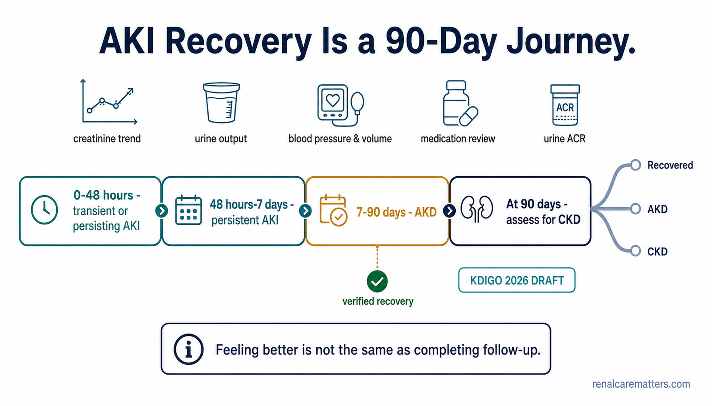
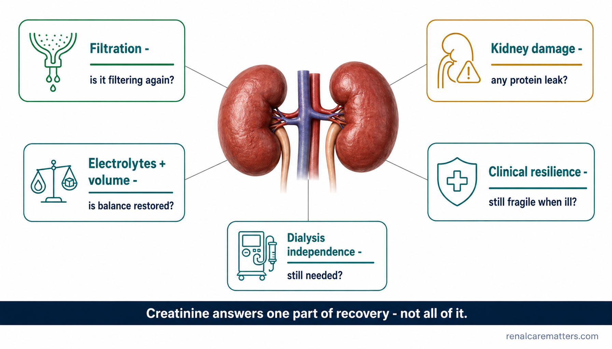
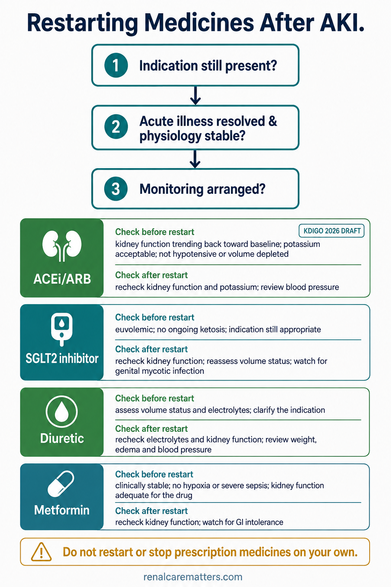
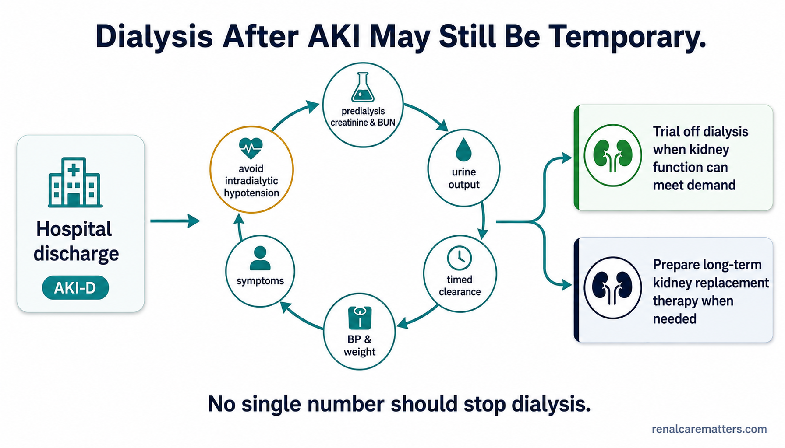

The hospital stay ended — the kidney story may not haveNatapos na ang pananatili sa ospital — ngunit maaaring hindi pa ang kuwento ng batoNatapos na ang pagpuyo sa ospital — apan tingali dili pa ang istorya sa batoMitapus ne ing pananatili king ospital — dapot mari ya pamu ing kwentu ning batu
"Your creatinine is much better. You can go home." That is good news — but it is not the same as saying the kidney has fully healed, or that no follow-up is needed. Acute kidney injury (AKI) can improve on paper without the kidney having completely recovered underneath."Mas maganda na ang iyong creatinine. Puwede ka nang umuwi." Magandang balita iyon — ngunit hindi iyon katumbas ng pagsasabing lubusan nang gumaling ang bato, o na hindi na kailangan ng follow-up. Ang acute kidney injury (AKI) ay maaaring gumanda sa papel nang hindi pa lubusang gumagaling ang bato sa ilalim."Mas maayo na ang imong creatinine. Makauli ka na." Maayo kanang balita — apan dili kana pareho sa pag-ingon nga hingpit nang naayo ang bato, o nga wala nay kinahanglang follow-up. Ang acute kidney injury (AKI) mahimong moayo sa papel nga wala pa hingpit nga naayo ang bato sa ilawom."Mas mayap na ing creatinine mu. Malyari na kang muli." Mayap a balita ita — dapot e ya katumbas ning pagsabing lubus neng migaling ing batu, o e na kailangan ing follow-up. Ing acute kidney injury (AKI) puedeng gumaling king papil nung e pa lubus a migaling ing batu king lalam.
AKI means the kidneys were suddenly injured — over hours to a few days — often by an infection, dehydration, low blood pressure, a medication, or a procedure. Many people recover well. But a blood test called creatinine that is falling, or even back near your old normal, answers only one recovery question: is the kidney filtering again? It does not tell you whether there is lingering damage, whether your blood pressure and body salts have settled, or whether the kidneys are still fragile the next time you get sick.Ang ibig sabihin ng AKI ay biglang nasaktan ang mga bato — sa loob ng ilang oras hanggang ilang araw — kadalasang dahil sa impeksyon, dehydration, mababang presyon ng dugo, isang gamot, o isang procedure. Maraming tao ang gumagaling nang maayos. Ngunit ang blood test na tinatawag na creatinine na bumababa, o malapit na sa dati mong normal, ay sumasagot lamang sa isang tanong tungkol sa paggaling: sumasala na ba muli ang bato? Hindi nito sinasabi kung may natitirang pinsala, kung tumino na ang iyong presyon ng dugo at mga asin sa katawan, o kung marupok pa rin ang mga bato sa susunod na pagkakasakit mo.Ang buot ipasabot sa AKI mao nga kalit nga nasamdan ang mga bato — sulod sa pipila ka oras hangtod pipila ka adlaw — kasagaran tungod sa impeksyon, dehydration, ubos nga presyon sa dugo, usa ka tambal, o usa ka procedure. Daghang tawo ang maayo og pagbawi. Apan ang blood test nga gitawag og creatinine nga nagkanaog, o duol na sa imong daan nga normal, motubag lang sa usa ka pangutana bahin sa pagbawi: nagsala na ba pag-usab ang bato? Wala niini isulti kung aduna pa bay nahabiling kadaot, kung nahusay na ang imong presyon sa dugo ug mga asin sa lawas, o kung huyang pa gihapon ang mga bato sa sunod nga pagkasakit nimo.Ing buri nang sabian ning AKI ya pin biglang mesaktan la reng batu — king kilub ning mangapilang oras anggang mangapilang aldo — masyadu uli ning impeksyon, dehydration, mababang presyon ning daya, metung a gamut, o metung a procedure. Dakal a tau ing gumaling nang mayap. Dapot ing blood test a ausan dang creatinine a bababa, o malapit na king dati mung normal, sasagut ya mu king metung a tanung tungkul king pamagaling: sasala ne pasibayu ing batu? E na sasabian nung atin natatagang pinsala, nung tinino ne ing presyon ning daya mu at reng asin king katawan, o nung marupuk la pamu reng batu king tutuking pamiwasakit mu.
The next 90 days are the bridge between three possible destinations: full recovery, acute kidney disease (AKD) — a middle zone where things are still not quite right — or chronic kidney disease (CKD), which is long-term. This guide shows you, and your clinician, what to watch, when to be reviewed, and how to safely rebuild your medication plan. It is written so you can read the patient sections, and your doctor can open the Clinicians tab for the evidence detail.Ang susunod na 90 araw ang tulay sa pagitan ng tatlong posibleng patutunguhan: ganap na paggaling, acute kidney disease (AKD) — isang gitnang sona kung saan hindi pa gaanong maayos ang mga bagay — o chronic kidney disease (CKD), na pangmatagalan. Ipinapakita ng gabay na ito sa iyo, at sa iyong clinician, kung ano ang babantayan, kailan susuriing muli, at kung paano ligtas na muling itatayo ang iyong plano sa gamot. Nakasulat ito upang mabasa mo ang mga seksyon para sa pasyente, at mabuksan ng iyong doktor ang tab na Clinicians para sa detalye ng ebidensya.Ang sunod nga 90 ka adlaw mao ang taytayan tali sa tulo ka posibleng padulngan: hingpit nga pagbawi, acute kidney disease (AKD) — usa ka tunga-tunga nga sona diin dili pa kaayo maayo ang mga butang — o chronic kidney disease (CKD), nga dugay nga panahon. Kini nga giya nagpakita kanimo, ug sa imong clinician, kung unsa ang bantayan, kanus-a susihon pag-usab, ug unsaon luwas nga pagtukod pag-usab ang imong plano sa tambal. Gisulat kini aron mabasa nimo ang mga seksyon alang sa pasyente, ug maablihan sa imong doktor ang tab nga Clinicians alang sa detalye sa ebidensya.Ing tutuking 90 aldo ing tete king pilatan ning atlung posibleng patutunggan: ganap a pamagaling, acute kidney disease (AKD) — metung a libutad a sona nung nu e pa masyadung mayap la reng bage — o chronic kidney disease (CKD), a matagal. Ipakit ne ning giya a iti keka, at king clinician mu, nung nanu ing babantayan, kapilan lawan pasibayu, at makananu tang ligtas a itatag pasibayu ing planu mung gamut. Mesulat ya iti bang mabasa mu reng seksyon para king pasyente, at mabuksan ne ning doktor mu ing tab a Clinicians para king detalye ning ebidensya.
Three things that can happen after you go homeTatlong bagay na maaaring mangyari matapos kang umuwiTulo ka butang nga mahimong mahitabo human ka mopauliAtlung bage a puedeng malyari kaibat mung muli
Another AKIIsa pang AKILain pang AKIAliwang AKI
A fresh illness, dehydration, or a risky medicine can injure the kidney again — recurrent AKI is common in the first months.Ang bagong sakit, dehydration, o mapanganib na gamot ay maaaring makasakit muli sa bato — karaniwan ang paulit-ulit na AKI sa mga unang buwan.Ang bag-ong sakit, dehydration, o delikado nga tambal mahimong makasamad pag-usab sa bato — kasagaran ang balik-balik nga AKI sa unang mga bulan.Ing bayung sakit, dehydration, o mapanganib a gamut puedeng makasakit pasibayu king batu — pangkaraniwan ing paulit-ulit a AKI karing mumunang bulan.
Lingering AKDNatitirang AKDNahabiling AKDNatatagang AKD
Between day 7 and day 90 the kidney may keep leaking protein, or filter below your baseline, without full recovery yet.Sa pagitan ng araw 7 at araw 90 maaaring patuloy na magtagas ng protina ang bato, o sumala nang mas mababa sa iyong baseline, nang wala pang ganap na paggaling.Tali sa adlaw 7 ug adlaw 90 mahimong magpadayon sa pagtulo og protina ang bato, o mosala og mas ubos sa imong baseline, nga wala pay hingpit nga pagbawi.King pilatan ning aldo 7 at aldo 90 puedeng magtagas ya pamu king protina ing batu, o sumala ng mas mababa king baseline mu, nung e pa ganap a migaling.
New or worse CKDBago o mas malalang CKDBag-o o mas grabeng CKDBayu o mas malalang CKD
Sometimes the injury leaves lasting change — higher blood pressure, protein in the urine, or a permanently lower filtering level.Minsan ang pinsala ay nag-iiwan ng pangmatagalang pagbabago — mas mataas na presyon ng dugo, protina sa ihi, o permanenteng mas mababang antas ng pagsala.Usahay ang kadaot magbilin og malungtarong kausaban — mas taas nga presyon sa dugo, protina sa ihi, o permanenteng mas ubos nga lebel sa pagsala.Kabang-kabang ing pinsala mag-iwan yang matagal a pamagbayu — mas matas a presyon ning daya, protina king mie, o permanenteng mas mababang antas ning pamagsala.
The one idea to keepAng isang ideyang dapat tandaanAng usa ka ideya nga angay hinumdomanIng metung a ideyang dapat tandanan
AKI can get better on blood tests without the kidney fully healing inside. A good recovery plan therefore measures both kidney function (how well it filters) and kidney damage (protein in the urine, an abnormal urine test), and keeps checking through 90 days. Feeling better is not the same as completing follow-up.Maaaring gumanda ang AKI sa blood test nang hindi pa lubusang gumagaling ang bato sa loob. Kaya't ang isang mahusay na plano sa paggaling ay sinusukat kapwa ang kidney function (kung gaano ito kahusay sumala) at ang pinsala sa bato (protina sa ihi, hindi normal na urine test), at patuloy na sumusuri hanggang 90 araw. Ang pakiramdam na mas maayos ay hindi katumbas ng pagkumpleto ng follow-up.Mahimong moayo ang AKI sa blood test nga wala pa hingpit nga naayo ang bato sa sulod. Busa ang usa ka maayong plano sa pagbawi nagsukod sa duha ka kidney function (kung unsa ka maayo kini mosala) ug kadaot sa bato (protina sa ihi, dili normal nga urine test), ug magpadayon sa pagsusi hangtod 90 ka adlaw. Ang pagbati og mas maayo dili pareho sa pagkompleto sa follow-up.Puedeng gumaling ing AKI king blood test nung e pa lubus a migaling ing batu king lalam. Inya ing metung a mayap a planu king pamagaling susukat na ing aduang kidney function (nung makananu ya kayap manala) at ing pinsala king batu (protina king mie, e normal a urine test), at tuluy-tuluy yang manigaral anggang 90 aldo. Ing pamiramdam a mas mayap ali ya katumbas ning pamagkumpleta ning follow-up.
The 0-to-90-day mapAng mapa mula araw 0 hanggang araw 90Ang mapa gikan sa adlaw 0 hangtod adlaw 90Ing mapa manibat aldo 0 anggang aldo 90
Doctors use time to describe recovery. The same word — "AKI" — becomes different labels depending on how long the problem lasts. Here is the map from the day of injury to day 90.Gumagamit ang mga doktor ng panahon upang ilarawan ang paggaling. Ang parehong salita — "AKI" — ay nagiging ibang mga label depende sa kung gaano katagal ang problema. Narito ang mapa mula sa araw ng pinsala hanggang araw 90.Naggamit ang mga doktor og panahon aron ihulagway ang pagbawi. Ang samang pulong — "AKI" — mahimong lain-laing label depende kung unsa ka dugay ang problema. Ania ang mapa gikan sa adlaw sa kadaot hangtod adlaw 90.Gagamit la reng doktor king panaun bang ilarawan ing pamagaling. Ing parehung amanu — "AKI" — magiging aliwang label depende king nung makananu ya katagal ing problema. Ini ing mapa manibat king aldo ning pinsala anggang aldo 90.
Improvement within two days is a good sign — but it does not erase the risk of trouble later.Ang pagbuti sa loob ng dalawang araw ay magandang senyales — ngunit hindi nito binubura ang panganib ng problema sa bandang huli.Ang pag-uswag sulod sa duha ka adlaw usa ka maayong timailhan — apan wala niini papason ang risgo sa samok unya.Ing pamagbuti king kilub ning aduang aldo mayap a senyales — dapot e na binubura ing panganib ning problema king tauli.
If the creatinine or urine output is still abnormal, the injury deserves an active second look.Kung ang creatinine o ang dami ng ihi ay hindi pa rin normal, nararapat na muling suriing mabuti ang pinsala.Kung ang creatinine o ang gidaghanon sa ihi dili pa gihapon normal, angay nga susihon pag-usab og maayo ang kadaot.Nung ing creatinine o ing dakal ning mie e pa rin normal, dapat lawan pasibayung mayap ing pinsala.
Acute kidney disease is the in-between zone: still not normal, but not yet "chronic." This is the window this guide is about.Ang acute kidney disease ang gitnang sona: hindi pa normal, ngunit hindi pa rin "chronic." Ito ang bahaging tinatalakay ng gabay na ito.Ang acute kidney disease mao ang tunga-tunga nga sona: dili pa normal, apan dili pa usab "chronic." Kini ang bahin nga gihisgotan niini nga giya.Ing acute kidney disease ing libutad a sona: e pa normal, dapot e pa rin "chronic." Iti ing bahagi a papansinan ning giya a iti.
If problems persist, they may now meet criteria for CKD. Normal results do not erase the history of AKI — it stays a risk marker.Kung nagpapatuloy ang mga problema, maaari na nilang maabot ang pamantayan para sa CKD. Ang normal na resulta ay hindi binubura ang kasaysayan ng AKI — nananatili itong marka ng panganib.Kung magpadayon ang mga problema, mahimo na nilang maabot ang sukdanan alang sa CKD. Ang normal nga resulta dili mopapas sa kasaysayan sa AKI — nagpabilin kini nga timaan sa risgo.Nung magpatuli la reng problema, puede na rang miras ing pamantayan para king CKD. Ing normal a resulta e na binubura ing kasaysayan ning AKI — mananatili yang marka ning panganib.

The recovery timeline as a bridge: the first 48 hours (transient vs persisting), day 2-7 (persistent AKI), day 7-90 (AKD, the recovery window), and day 90 (assess for CKD). Feeling better is not the same as completing follow-up.
- AKI
- Acute kidney injury
- AKD
- Acute kidney disease
- CKD
- Chronic kidney disease
Notice the middle box. Acute kidney disease (AKD) is the stretch from day 7 to day 90 when the kidney is still healing or still abnormal. It is not a failure — it is a checkpoint. The goal during AKD is active reassessment, not passively waiting three months to be told you have CKD.Pansinin ang gitnang kahon. Ang acute kidney disease (AKD) ay ang tagal mula araw 7 hanggang araw 90 kung kailan ang bato ay gumagaling pa o hindi pa normal. Hindi ito kabiguan — isa itong checkpoint. Ang layunin sa panahon ng AKD ay aktibong muling pagsusuri, hindi ang basta maghintay ng tatlong buwan upang sabihan na may CKD ka.Timan-i ang tunga nga kahon. Ang acute kidney disease (AKD) mao ang gilay-on gikan sa adlaw 7 hangtod adlaw 90 kung kanus-a ang bato nag-ayo pa o dili pa normal. Dili kini kapakyasan — usa kini ka checkpoint. Ang tumong panahon sa AKD mao ang aktibong pagsusi pag-usab, dili ang pasibo nga paghulat og tulo ka bulan aron sultihan nga naa kay CKD.Pansinan me ing libutad a kahun. Ing acute kidney disease (AKD) ing tagal manibat aldo 7 anggang aldo 90 nung kapilan ing batu gagaling ya pamu o e pa normal. E ya kabiguan — metung yang checkpoint. Ing layun king panaun ning AKD ing aktibong pamanigaral pasibayu, ali ing basta maintaya king atlung bulan bang sabian a atin kang CKD.
Why the timeline matters to youBakit mahalaga sa iyo ang timelineNgano nga importante kanimo ang timelineBakit importante keka ing timeline
The timeline decides how soon you should be seen again. Someone still in "persistent AKI" needs a review in days to a week or two. Someone stable and improving may be reviewed by 30 days. But everyone with a meaningful AKI needs a structured check at day 90 — that is when your clinician decides which destination you reached.Ang timeline ang nagpapasya kung gaano kabilis ka dapat suriing muli. Ang isang nasa "persistent AKI" pa ay kailangang suriin sa loob ng ilang araw hanggang isa o dalawang linggo. Ang isang matatag at bumubuti ay maaaring suriin sa loob ng 30 araw. Ngunit lahat ng may makabuluhang AKI ay kailangan ng maayos na check sa araw 90 — doon magpapasya ang iyong clinician kung aling patutunguhan ang naabot mo.Ang timeline mao ang mohukom kung unsa ka paspas ka kinahanglang susihon pag-usab. Ang usa nga anaa pa sa "persistent AKI" nagkinahanglan og pagsusi sulod sa pipila ka adlaw hangtod usa o duha ka semana. Ang usa nga lig-on ug nag-uswag mahimong susihon sulod sa 30 ka adlaw. Apan ang tanan nga adunay hinungdanong AKI nagkinahanglan og structured nga pagsusi sa adlaw 90 — didto mohukom ang imong clinician kung asa nga padulngan ang imong naabot.Ing timeline ing magpasya nung makananu ya kaganat ka dapat lawan pasibayu. Ing metung a atiu pamu king "persistent AKI" kailangan yang lawan king kilub ning mangapilang aldo anggang metung o aduang dominggu. Ing metung a matatag at bubuti puedeng lawan king kilub ning 30 aldo. Dapot ing eganaganang atin makabuluhang AKI kailangan da ing mayap a check king aldo 90 — karin magpasya ing clinician mu nung nanung patutunggan ing miras mu.
When is AKI truly recovered?Kailan tunay na gumaling ang AKI?Kanus-a tinuod nga naayo ang AKI?Kapilan tune yang migaling ing AKI?
Think of a house after a flood. Getting the electricity back on (the lights work again) is not the same as having every damaged room inspected. Creatinine is the "lights on" test — it mostly reflects filtering. It does not directly inspect the kidney's tubules, its small blood vessels, inflammation, or scarring. So real recovery is judged across five domains, not one number.Isipin ang isang bahay pagkatapos ng baha. Ang pagbalik ng kuryente (gumagana muli ang mga ilaw) ay hindi katumbas ng pagpapasuri sa bawat nasirang silid. Ang creatinine ay ang "may ilaw" na test — kadalasang nagpapakita ito ng pagsala. Hindi nito direktang sinusuri ang mga tubule ng bato, ang maliliit na daluyan ng dugo, ang pamamaga, o ang pagpilat. Kaya ang tunay na paggaling ay hinahatulan sa limang domain, hindi sa isang numero.Hunahunaa ang usa ka balay human sa baha. Ang pagbalik sa koryente (mogana na usab ang mga suga) dili pareho sa pagpasusi sa matag naguba nga kwarto. Ang creatinine mao ang "naa nay suga" nga test — kasagaran nagpakita kini sa pagsala. Wala niini susiha direkta ang mga tubule sa bato, ang gagmay nga ugat sa dugo, ang paghubag, o ang pagpilat. Busa ang tinuod nga pagbawi gihukman latas sa lima ka domain, dili sa usa ka numero.Isipan me ing metung a bale kaibat ning baha. Ing pamibalik ning kuryente (gagana la pasibayu reng sulu) ali ya katumbas ning pamagpasuri king balang mesirang kwartu. Ing creatinine ing "atin sulu" a test — masyadu neng papakit ing pamagsala. E na direktang susuri reng tubule ning batu, reng malating dalan ning daya, ing pamamaga, o ing pagpilat. Inya ing tune a pamagaling ahatulan ya king limang domain, ali king metung a numeru.
1 · Filtration1 · Pagsala1 · Pagsala1 · Pamagsala
The creatinine trend, and estimated GFR (eGFR — an estimate of filtering) once it is steady. Cystatin C — another filtering marker — is used when creatinine is unreliable.Ang takbo ng creatinine, at ang estimated GFR (eGFR — isang pagtantya sa pagsala) kapag matatag na ito. Ang cystatin C — isa pang filtering marker — ay ginagamit kapag hindi maaasahan ang creatinine.Ang tinuoray sa creatinine, ug ang estimated GFR (eGFR — usa ka banabana sa pagsala) kung lig-on na kini. Ang cystatin C — laing filtering marker — gigamit kung dili kasaligan ang creatinine.Ing takbu ning creatinine, at ing estimated GFR (eGFR — metung a pagtantya king pamagsala) nung matatag ne. Ing cystatin C — aliwang filtering marker — gagamitan nung e maasahan ing creatinine.
2 · Kidney damage2 · Pinsala sa bato2 · Kadaot sa bato2 · Pinsala king batu
A urine test for protein — the urine albumin-to-creatinine ratio (UACR) — and a urinalysis. These catch damage that filtering numbers miss.Isang urine test para sa protina — ang urine albumin-to-creatinine ratio (UACR) — at isang urinalysis. Nahuhuli ng mga ito ang pinsalang hindi napapansin ng mga numero ng pagsala.Usa ka urine test alang sa protina — ang urine albumin-to-creatinine ratio (UACR) — ug usa ka urinalysis. Kini nakadakop sa kadaot nga wala makita sa mga numero sa pagsala.Metung a urine test para king protina — ing urine albumin-to-creatinine ratio (UACR) — at metung a urinalysis. Dakpan da reti ing pinsala a e apansin ning numeru ning pamagsala.
3 · Balance & volume3 · Balanse & dami ng likido3 · Balanse & gidaghanon sa likido3 · Balanse & dakal ning likido
Potassium, bicarbonate, sodium, fluid status, and blood pressure (BP). The kidney can filter acceptably yet still struggle to regulate these.Potassium, bicarbonate, sodium, kalagayan ng likido, at presyon ng dugo (BP). Maaaring sumala nang katanggap-tanggap ang bato ngunit nahihirapan pa ring iregula ang mga ito.Potassium, bicarbonate, sodium, kahimtang sa likido, ug presyon sa dugo (BP). Mahimong mosala og maayo ang bato apan naglisod gihapon sa pagkontrol niini.Potassium, bicarbonate, sodium, kalagayan ning likido, at presyon ning daya (BP). Puedeng sumala yang katanggap-tanggap ing batu dapot mahirap ya pamung iregula deti.
4 · Resilience4 · Katatagan4 · Kalig-on4 · Katatagan
Does another illness knock you down again? Can you tolerate your important medicines? This tests whether you are still fragile.Muli ka bang bumabagsak dahil sa ibang sakit? Kaya mo bang tiisin ang iyong mahahalagang gamot? Sinusubok nito kung marupok ka pa rin.Matumba ka ba pag-usab tungod sa laing sakit? Maantos ba nimo ang imong importanteng mga tambal? Gisulayan niini kung huyang ka pa gihapon.Mibabagsak ka pasibayu uli ning aliwang sakit? Kaya mu rang tiisan reng importante mung gamut? Susubukan na iti nung marupuk ka pamu.
5 · Dialysis independence5 · Kalayaan sa dialysis5 · Kagawasan sa dialysis5 · Kalayan king dialysis
If you needed dialysis, is it still needed? Urine output and blood trends between sessions answer this — and it can change over weeks.Kung nangailangan ka ng dialysis, kailangan pa ba ito? Ang dami ng ihi at ang takbo ng dugo sa pagitan ng mga session ang sumasagot dito — at maaaring magbago ito sa loob ng ilang linggo.Kung nagkinahanglan ka og dialysis, kinahanglan pa ba kini? Ang gidaghanon sa ihi ug ang tinuoray sa dugo tali sa mga session mao ang motubag niini — ug mahimong mausab kini sulod sa pipila ka semana.Nung mangailangan ka king dialysis, kailangan ya pamu iti? Ing dakal ning mie at ing takbu ning daya king pilatan da reng session ing sasagut kaniti — at puedeng magbayu iti king kilub ning mangapilang dominggu.

Recovery is judged across five domains, not one number: filtration (creatinine/eGFR), kidney damage (urine protein), balance and volume (potassium, bicarbonate, blood pressure), clinical resilience, and dialysis independence. Creatinine answers one part of recovery, not all of it.
- eGFR
- Estimated glomerular filtration rate
- UACR
- Urine albumin-to-creatinine ratio
- BP
- Blood pressure
Why a "normal" creatinine can fool youBakit maaaring malinlang ka ng isang "normal" na creatinineNgano nga mahimo kang malimbongan sa usa ka "normal" nga creatinineBakit puedeng malinlang na ka ning metung a "normal" a creatinine
Several things make creatinine look better than the kidney truly is:May ilang bagay na nagpapaganda sa creatinine kaysa sa tunay na kalagayan ng bato:Adunay pipila ka butang nga nagpaayo sa dagway sa creatinine kaysa sa tinuod nga kahimtang sa bato:Atin mangapilang bage a magpaganda king creatinine kesa king tune a kalagayan ning batu:
- Muscle loss. A long illness, time in the intensive care unit (ICU), poor appetite, or an amputation lowers muscle. Since muscle makes creatinine, the number drops even if filtering has not improved.Pagkawala ng kalamnan. Ang matagal na sakit, panahon sa intensive care unit (ICU), mahinang gana sa pagkain, o isang amputation ay nagpapababa ng kalamnan. Dahil ang kalamnan ang gumagawa ng creatinine, bumababa ang numero kahit hindi bumuti ang pagsala.Pagkawala sa kaunoran. Ang taas nga sakit, panahon sa intensive care unit (ICU), huyang nga gana sa pagkaon, o usa ka amputation nagpaubos sa kaunoran. Tungod kay ang kaunoran maoy naghimo og creatinine, mokunhod ang numero bisan wala mo-uswag ang pagsala.Pamawala ning laman. Ing matagal a sakit, panaun king intensive care unit (ICU), maina a gana king pamangan, o metung a amputation magpababa yang laman. Uling ing laman ing gagawa king creatinine, bababa ing numeru agyang e migbuti ing pamagsala.
- Fluid changes. Extra body water dilutes creatinine; losing that water later concentrates it. The number moves without the kidney changing.Pagbabago sa likido. Ang labis na tubig sa katawan ay nagpapalabnaw ng creatinine; ang pagkawala ng tubig na iyon sa bandang huli ay nagpapatindi nito. Gumagalaw ang numero nang hindi nagbabago ang bato.Pagbag-o sa likido. Ang sobrang tubig sa lawas nagpalabnaw sa creatinine; ang pagkawala niana nga tubig unya nagpalisod niini. Molihok ang numero nga wala mausab ang bato.Pamagbayu king likido. Ing sobrang danum king katawan magpalabnaw yang creatinine; ing pamawala ning danum a ita king tauli magpatindi ya kaniti. Gagalo ing numeru nung e magbayu ing batu.
- Hidden nephron loss. The kidney can lose working units and still keep a normal resting creatinine by making the survivors work harder — using up its spare capacity ("reserve") in the process.Nakatagong pagkawala ng nephron. Maaaring mawalan ang bato ng mga gumaganang yunit at manatili pa ring normal ang creatinine sa pamamagitan ng pagpapatrabaho nang mas mahirap sa mga natira — nauubos ang reserbang kapasidad nito ("reserve") sa proseso.Tinago nga pagkawala sa nephron. Mahimong mawad-an ang bato og naglihok nga mga yunit ug magpabiling normal ang creatinine pinaagi sa pagpakusog sa trabaho sa mga nahabilin — nga naggamit sa reserbang kapasidad niini ("reserve") sa proseso.Makubling pamawala ning nephron. Puedeng mawalan ing batu king gaganang yunit at mananatili yang normal ing creatinine king pamamagitan ning pamagpatrabaju nang mas masikan karing mitagan — mauubus ing reserbang kapasidad na ("reserve") king proseso.
This is why your clinician may add a urine protein test or, in the right situation, a cystatin C blood test — and why "back to normal" is reassuring but not the whole story.Ito ang dahilan kung bakit maaaring magdagdag ang iyong clinician ng urine protein test o, sa tamang sitwasyon, ng cystatin C blood test — at kung bakit ang "bumalik sa normal" ay nakapagpapanatag ngunit hindi ang buong kuwento.Mao kini ang hinungdan nga mahimong magdugang ang imong clinician og urine protein test o, sa saktong sitwasyon, og cystatin C blood test — ug ngano nga ang "mibalik sa normal" makapahupay apan dili ang tibuok istorya.Iti ing dahilan nung bakit puedeng magdagdag ing clinician mu king urine protein test o, king tamang sitwasyon, king cystatin C blood test — at bakit ing "mibalik king normal" makapanatag ya dapot ali ya ing mabilug a kwentu.
Draft recovery-status estimatorDraft na pantantya ng katayuan ng paggalingDraft nga banabana sa kahimtang sa pagbawiDraft a pantantya king kalagayan ning pamagaling KDIGO 2026 DRAFT
This tool applies the proposed draft definitions of complete and partial recovery to your filtering numbers. It describes filtration-marker recovery only — it does not prove the kidney has healed inside, and it should not be used while your creatinine is still changing quickly, if your baseline is unknown, or while you are on dialysis. Bring the result to your clinician; it is a conversation aid, not a diagnosis.Inilalapat ng tool na ito ang iminungkahing draft na kahulugan ng ganap at bahagyang paggaling sa iyong mga numero ng pagsala. Inilalarawan nito ang paggaling ayon sa filtration marker lamang — hindi nito pinapatunayan na gumaling na ang bato sa loob, at hindi ito dapat gamitin habang mabilis pang nagbabago ang iyong creatinine, kung hindi alam ang iyong baseline, o habang nasa dialysis ka. Dalhin ang resulta sa iyong clinician; isa itong tulong sa usapan, hindi isang diagnosis.Kini nga tool nag-aplay sa gisugyot nga draft nga kahulugan sa hingpit ug partial nga pagbawi sa imong mga numero sa pagsala. Gihulagway niini ang pagbawi base sa filtration marker lamang — wala niini pamatud-i nga naayo na ang bato sa sulod, ug dili kini angay gamiton samtang paspas pa nga nagbag-o ang imong creatinine, kung wala mahibaloi ang imong baseline, o samtang naa ka sa dialysis. Dad-a ang resulta sa imong clinician; usa kini ka tabang sa panag-istoryahanay, dili usa ka diagnosis.Ilalapat ne ning tool a iti ing iminumungkahing draft a kabaldugan ning ganap at bahagi a pamagaling king numeru mung pamagsala. Ilarawan na ing pamagaling agpang king filtration marker mu — e na papatunayan a migaling ne ing batu king lalam, at e ya dapat gamitan kabang maganat pa yang magbayu ing creatinine mu, nung e balu ing baseline mu, o kabang atiu ka king dialysis. Dalan me ing resulta king clinician mu; metung yang tulung king pamagsalita, ali metung a diagnosis.
Thresholds from the March 2026 KDIGO AKI/AKD public-review draft (proposed, not final). This educational tool describes filtration-marker recovery only — not structural healing. It does not calculate while a baseline is missing or while you are on dialysis, and it gives an informational-only result when creatinine is not steady.Ang mga threshold ay mula sa Marso 2026 KDIGO AKI/AKD public-review draft (iminungkahi, hindi pinal). Inilalarawan ng edukasyonal na tool na ito ang paggaling ayon sa filtration marker lamang — hindi ang pagpapagaling ng istruktura. Hindi ito nagkukwenta habang walang baseline o habang nasa dialysis ka, at nagbibigay ito ng resulta para sa impormasyon lamang kapag hindi matatag ang creatinine.Ang mga threshold gikan sa Marso 2026 KDIGO AKI/AKD public-review draft (gisugyot, dili final). Kini nga edukasyonal nga tool naghulagway sa pagbawi base sa filtration marker lamang — dili sa structural nga pag-ayo. Wala kini mag-compute samtang walay baseline o samtang naa ka sa dialysis, ug naghatag kini og resulta alang sa impormasyon lamang kung dili lig-on ang creatinine.Reng threshold menibat king Marso 2026 KDIGO AKI/AKD public-review draft (iminumungkahi, ali pinal). Ining edukasyonal a tool ilarawan na ing pamagaling agpang king filtration marker mu — ali ing structural a pamagaling. E ya magkwenta kabang alang baseline o kabang atiu ka king dialysis, at magbie yang resulta para king impormasyon mu kabang e matatag ing creatinine.
The discharge kidney passportAng discharge kidney passportAng discharge kidney passportIng discharge kidney passport
Ask that these details leave the hospital with you — on your discharge paper, or written into your 90-day planner. A good handoff prevents the most common failure after AKI: nobody owning the follow-up.Hilingin na ang mga detalyeng ito ay umalis sa ospital kasama mo — nasa iyong discharge paper, o nakasulat sa iyong 90-day planner. Ang mahusay na pagturnover ay pumipigil sa pinakakaraniwang pagkabigo pagkatapos ng AKI: walang may pananagutan sa follow-up.Hangyoa nga kini nga mga detalye mogawas sa ospital uban kanimo — sa imong discharge paper, o nasulat sa imong 90-day planner. Ang maayong pagturnover nagpugong sa pinakakomon nga kapakyasan human sa AKI: walay may tulubagon sa follow-up.Aduan me a reng detalye a iti lumual la king ospital kayabe mu — king discharge paper mu, o mesulat king 90-day planner mu. Ing mayap a pagturnover pipiglan na ing pekakaraniwang pagkabigu kaibat ning AKI: alang tau a atin pananagutan king follow-up.
- The suspected cause of your AKI, and any question still unanswered.Ang pinaghihinalaang sanhi ng iyong AKI, at anumang tanong na hindi pa nasasagot.Ang gidudahang hinungdan sa imong AKI, ug bisan unsang pangutana nga wala pa matubag.Ing pinaghihinalaang sanhi ning AKI mu, at nanumang tanung a e pa mesagut.
- Your baseline creatinine / eGFR and its date — or a clear note that baseline is uncertain.Ang iyong baseline creatinine / eGFR at ang petsa nito — o isang malinaw na tala na hindi tiyak ang baseline.Ang imong baseline creatinine / eGFR ug ang petsa niini — o usa ka klaro nga nota nga dili sigurado ang baseline.Ing baseline creatinine / eGFR mu at ing petsa na — o metung a malinaw a nota a e tiyak ing baseline.
- The worst point: peak creatinine, lowest urine output if known, AKI stage, and whether dialysis was used.Ang pinakamasamang punto: pinakamataas na creatinine, pinakamababang dami ng ihi kung alam, AKI stage, at kung ginamit ang dialysis.Ang labing grabeng punto: pinakataas nga creatinine, pinakaubos nga gidaghanon sa ihi kung nahibaloan, AKI stage, ug kung gigamit ba ang dialysis.Ing pekamarok a punto: pekamatas a creatinine, pekamababang dakal ning mie nung balu, AKI stage, at nung megamit ya ing dialysis.
- Your discharge numbers: creatinine, potassium, bicarbonate, blood pressure, weight, urine output.Ang iyong discharge numbers: creatinine, potassium, bicarbonate, presyon ng dugo, timbang, dami ng ihi.Ang imong discharge numbers: creatinine, potassium, bicarbonate, presyon sa dugo, timbang, gidaghanon sa ihi.Ing discharge numbers mu: creatinine, potassium, bicarbonate, presyon ning daya, timbang, dakal ning mie.
- A recovery label: complete, partial, not resolved, or indeterminate.Isang label ng paggaling: ganap, bahagi, hindi naresolba, o hindi tiyak.Usa ka label sa pagbawi: hingpit, partial, wala masulbad, o dili sigurado.Metung a label ning pamagaling: ganap, bahagi, e mesolusyunan, o e tiyak.
- Every medicine changed — why, and a written plan for restarting or reviewing it (with who owns that decision).Bawat gamot na binago — bakit, at isang nakasulat na plano para sa muling pagsisimula o pagsusuri nito (kasama kung sino ang may pananagutan sa desisyong iyon).Matag tambal nga giusab — ngano, ug usa ka nasulat nga plano alang sa pagsugod pag-usab o pagsusi niini (uban kung kinsa ang may tulubagon sa maong desisyon).Balang gamut a mebayu — bakit, at metung a mesulat a planu para king pamibalik o pamanigaral kaniti (kayabe nung ninu ing atin pananagutan king desisyon a ita).
- Things to avoid — nephrotoxins such as NSAIDs (non-steroidal anti-inflammatory drugs) and certain scans with contrast dye.Mga bagay na iwasan — mga nephrotoxin tulad ng NSAIDs (non-steroidal anti-inflammatory drugs) at ilang scan na may contrast dye.Mga butang nga likayan — mga nephrotoxin sama sa NSAIDs (non-steroidal anti-inflammatory drugs) ug pipila ka scan nga adunay contrast dye.Reng bage a iwasan — reng nephrotoxin anti reng NSAIDs (non-steroidal anti-inflammatory drugs) at mangapilang scan a atin contrast dye.
- A named clinician or team responsible for your follow-up.Isang pinangalanang clinician o team na may pananagutan sa iyong follow-up.Usa ka ginganlan nga clinician o team nga may tulubagon sa imong follow-up.Metung a pinangalanan a clinician o team a atin pananagutan king follow-up mu.
- The date of your next visit and next blood test.Ang petsa ng iyong susunod na bisita at susunod na blood test.Ang petsa sa imong sunod nga bisita ug sunod nga blood test.Ing petsa ning tutuking bisita mu at tutuking blood test.
- A day-90 plan to check both kidney function and kidney damage.Isang day-90 plan upang suriin kapwa ang kidney function at kidney damage.Usa ka day-90 plan aron susihon ang duha ka kidney function ug kidney damage.Metung a day-90 plan bang suriin ing aduang kidney function at kidney damage.
- Any pending results — tests, imaging, biopsy, cultures, or specialist appointments.Anumang nakabinbing resulta — mga test, imaging, biopsy, cultures, o mga appointment sa specialist.Bisan unsang nagpaabot nga resulta — mga test, imaging, biopsy, cultures, o mga appointment sa specialist.Nanumang nakabinbin a resulta — reng test, imaging, biopsy, cultures, o reng appointment king specialist.
- Sick-day and emergency instructions, and who to call.Mga tagubilin para sa araw ng pagkakasakit at emergency, at kung sino ang tatawagan.Mga instruksyon alang sa adlaw sa pagkasakit ug emergency, ug kinsa ang tawagan.Reng tagubilin para king aldo ning pamiwasakit at emergency, at ninu ing ausan.
Your 90-day recovery plannerAng iyong 90-day recovery plannerAng imong 90-day recovery plannerIng 90-day recovery planner mu
The downloadable AKI/AKD 90-Day Recovery Planner turns this passport into fill-in pages you and your clinician complete together — a road map of milestones, a lab tracker, a medication restart plan, home-monitoring sheets, a sick-day plan, and a day-90 outcome page. Every medication line has a space for the prescriber who approved it. Download the planner (PDF), or tap the download button at the bottom-left of this page — then fill it in with your clinician.Ginagawa ng maida-download na AKI/AKD 90-Day Recovery Planner ang passport na ito na mga pahinang pupunan na kumukumpleto ninyo ng iyong clinician nang magkasama — isang road map ng mga milestone, isang lab tracker, isang plano sa muling pagsisimula ng gamot, mga home-monitoring sheet, isang sick-day plan, at isang day-90 outcome page. Bawat linya ng gamot ay may puwang para sa prescriber na nag-apruba nito. I-download ang planner (PDF), o pindutin ang download button sa kaliwang-ibaba ng pahinang ito — pagkatapos ay punan ito kasama ang iyong clinician.Ang ma-download nga AKI/AKD 90-Day Recovery Planner naghimo niini nga passport ngadto sa mga panid nga pun-an nga kompletohon ninyo sa imong clinician nga magkuyog — usa ka road map sa mga milestone, usa ka lab tracker, usa ka plano sa pagsugod pag-usab sa tambal, mga home-monitoring sheet, usa ka sick-day plan, ug usa ka day-90 outcome page. Matag linya sa tambal adunay luna alang sa prescriber nga nag-aprobar niini. I-download ang planner (PDF), o i-tap ang download button sa wala-ubos niini nga panid — dayon pun-a kini uban sa imong clinician.Ing mada-download a AKI/AKD 90-Day Recovery Planner gagawan na ing passport a iti king mangapilang pahinang pupunan a kumpletuan yu ning clinician mu a mikakayabe — metung a road map da reng milestone, metung a lab tracker, metung a planu king pamibalik ning gamut, reng home-monitoring sheet, metung a sick-day plan, at metung a day-90 outcome page. Balang linya ning gamut atin yang puang para king prescriber a mig-aprub kaniti. I-download ing planner (PDF), o pisikan me ing download button king kaili-lalam ning pahinang iti — kaibat punan me kayabe ing clinician mu.
When should you be reviewed?Kailan ka dapat suriing muli?Kanus-a ka angay susihon pag-usab?Kapilan ka dapat lawan pasibayu?
There is no single "come back in 3 months" answer. The right timing depends on how severe the AKI was, how well you are recovering, and what else is going on. Below is a practical (not a validated) way to think about it — your clinician decides your tier.Walang iisang sagot na "bumalik ka sa loob ng 3 buwan." Ang tamang panahon ay nakadepende sa kung gaano kalala ang AKI, kung gaano ka kahusay gumagaling, at kung ano pa ang nangyayari. Sa ibaba ay isang praktikal (hindi napatunayan) na paraan ng pag-iisip tungkol dito — ang iyong clinician ang magpapasya sa iyong tier.Walay usa ka tubag nga "balik ka sa 3 ka bulan." Ang husto nga panahon nagdepende kung unsa ka grabe ang AKI, kung unsa ka maayo ang imong pagbawi, ug unsa pa ang nagakahitabo. Sa ubos usa ka praktikal (dili pa napamatud-an) nga paagi sa paghunahuna niini — ang imong clinician ang mohukom sa imong tier.Alang metung a sagut a "mibalik ka king kilub ning 3 bulan." Ing tamang panaun depende ya king nung makananu ya kalala ing AKI, nung makananu ka kayap gumaling, at nung nanu pa ing malyalyari. King lalam metung a praktikal (e pa mepatunayan) a paralan ning pamag-isip tungkul kaniti — ing clinician mu ing magpasya king tier mu.
Urgent — same day to within 24–72 hoursAgaran — sa parehong araw hanggang sa loob ng 24–72 orasDinalian — sa samang adlaw hangtod sulod sa 24–72 ka orasAgad — king parehung aldo anggang king kilub ning 24–72 oras
Worsening kidney numbers or potassium at discharge; little or no urine; breathlessness, swelling, or rapid weight gain; a fainting-low blood pressure; still on dialysis or just tried off it; a suspected blockage or active kidney inflammation; being unable to keep fluids down; or having no safe monitoring plan. Several of these should prompt re-checking whether it is even safe to be home.Lumalalang mga numero ng bato o potassium sa discharge; kaunti o walang ihi; hirap sa paghinga, pamamaga, o mabilis na pagtaas ng timbang; nakahihilong-babang presyon ng dugo; nasa dialysis pa o katatapos lang subukang itigil; pinaghihinalaang barado o aktibong pamamaga ng bato; hindi kayang panatilihin ang inumin; o walang ligtas na plano sa pagsubaybay. Ang ilan sa mga ito ay dapat mag-udyok ng muling pagsusuri kung ligtas nga bang nasa bahay.Nagkagrabe nga mga numero sa bato o potassium sa discharge; gamay o walay ihi; kalisod sa pagginhawa, paghubag, o paspas nga pagtaas sa timbang; makalipong-ubos nga presyon sa dugo; naa pa sa dialysis o bag-o lang gisulayan og undang; gidudahang barado o aktibong paghubag sa bato; dili makapabilin sa likido; o walay luwas nga plano sa pagbantay. Pipila niini angay mag-aghat sa pagsusi pag-usab kung luwas ba gyud nga naa sa balay.Lumalalang numeru ning batu o potassium king discharge; ditak o alang mie; kahirapan king pamanginan, pamamaga, o maganat a pagtaas ning timbang; makalinong-lalam a presyon ning daya; atiu pa king dialysis o kayaus lang sinubukang itigil; pinaghihinalaang barado o aktibong pamamaga ning batu; e kaya panatilian ing inuman; o alang ligtas a planu king pamagbante. Deng aliwa kaniti dapat mag-udyuk king pamanigaral pasibayu nung ligtas ya naman ing atiu king bale.
Within 1–2 weeksSa loob ng 1–2 linggoSulod sa 1–2 ka semanaKing kilub ning 1–2 dominggu
Moderate-to-severe (stage 2–3) AKI; creatinine still above baseline or still moving; any dialysis during the admission even if it stopped; heart failure, advanced CKD, significant urine protein, cirrhosis, a transplant, or frailty; an unsettled blood-pressure, fluid, or salt problem; important medicines just stopped or just restarted; or an uncertain cause.Katamtaman-hanggang-malalang (stage 2–3) AKI; creatinine na mas mataas pa sa baseline o gumagalaw pa; anumang dialysis noong naka-admit kahit huminto na; heart failure, advanced CKD, malaking urine protein, cirrhosis, transplant, o kahinaan; hindi pa tuminong presyon ng dugo, likido, o asin; mahahalagang gamot na katatapos lang ihinto o katatapos lang ibalik; o hindi tiyak na sanhi.Kasarangan-ngadto-grabe (stage 2–3) nga AKI; creatinine nga taas pa sa baseline o naglihok pa; bisan unsang dialysis atol sa admission bisan mihunong na; heart failure, advanced CKD, dako nga urine protein, cirrhosis, transplant, o kaluya; wala pa mahusay nga presyon sa dugo, likido, o asin nga problema; importanteng mga tambal nga bag-o lang gihunong o bag-o lang gibalik; o dili sigurado nga hinungdan.Katamtaman-anggang-malalang (stage 2–3) a AKI; creatinine a mas matas pa king baseline o gagalo pa; nanumang dialysis kabang meka-admit agyang mitigil ne; heart failure, advanced CKD, maragul a urine protein, cirrhosis, transplant, o kaluyan; e pa tinino a presyon ning daya, likido, o asin; importanteng gamut a kayaus lang tinigil o kayaus lang mibalik; o e tiyak a sanhi.
By 30 daysPagsapit ng 30 arawPag-abot sa 30 ka adlawPamiras ning 30 aldo
Reasonable for uncomplicated stage 1 AKI: creatinine below 1.2× baseline and stable, steady blood pressure and salts, no high-risk condition, and a clear medication plan.Makatuwiran para sa walang-komplikasyong stage 1 AKI: creatinine na mas mababa sa 1.2× baseline at matatag, matatag na presyon ng dugo at mga asin, walang high-risk na kondisyon, at malinaw na plano sa gamot.Makatarunganon alang sa walay-komplikasyon nga stage 1 AKI: creatinine nga ubos sa 1.2× baseline ug lig-on, lig-on nga presyon sa dugo ug mga asin, walay high-risk nga kondisyon, ug klaro nga plano sa tambal.Makatuiran para king alang-komplikasyon a stage 1 AKI: creatinine a mas mababa king 1.2× baseline at matatag, matatag a presyon ning daya at reng asin, alang high-risk a kondisyon, at malinaw a planu king gamut.
Everyone — a day-90 checkpointLahat — isang day-90 checkpointTanan — usa ka day-90 checkpointEganagana — metung a day-90 checkpoint
Whatever your tier, a structured day-90 review should check filtering (creatinine/eGFR when steady), potassium and bicarbonate as needed, a urine protein test (UACR preferred), blood pressure and fluid status, a full medication review, and a clear label of where you landed.Anuman ang iyong tier, ang isang maayos na day-90 review ay dapat suriin ang pagsala (creatinine/eGFR kapag matatag), potassium at bicarbonate kung kinakailangan, isang urine protein test (mas mainam ang UACR), presyon ng dugo at kalagayan ng likido, isang buong pagsusuri ng gamot, at isang malinaw na label kung saan ka napunta.Bisan unsa ang imong tier, ang usa ka structured nga day-90 review angay mosusi sa pagsala (creatinine/eGFR kung lig-on), potassium ug bicarbonate kung gikinahanglan, usa ka urine protein test (mas maayo ang UACR), presyon sa dugo ug kahimtang sa likido, usa ka bug-os nga pagsusi sa tambal, ug usa ka klaro nga label kung asa ka naabot.Nanumang tier mu, ing metung a mayap a day-90 review dapat na suriin ing pamagsala (creatinine/eGFR nung matatag), potassium at bicarbonate nung kailangan, metung a urine protein test (mas mayap ing UACR), presyon ning daya at kalagayan ning likido, metung a mabilug a pamanigaral king gamut, at metung a malinaw a label nung nokarin ka miras.
Some situations point toward a kidney specialist (nephrologist) rather than primary care alone: you needed dialysis; creatinine stays 1.5× or more above baseline or eGFR is under 30; heavy urine protein or blood; a suspected specific kidney disease; stubborn salt, acid, blood-pressure, or fluid problems; pregnancy-related or recurrent AKI; or a team that cannot arrange timely monitoring.May ilang sitwasyon na tumutukoy sa isang kidney specialist (nephrologist) sa halip na primary care lamang: nangailangan ka ng dialysis; nananatili ang creatinine na 1.5× o higit pa sa baseline o mas mababa sa 30 ang eGFR; malakas na urine protein o dugo; isang pinaghihinalaang tiyak na sakit sa bato; matigas na problema sa asin, acid, presyon ng dugo, o likido; AKI na kaugnay ng pagbubuntis o paulit-ulit; o isang team na hindi makapag-ayos ng maagap na pagsubaybay.Adunay pipila ka sitwasyon nga motudlo ngadto sa usa ka kidney specialist (nephrologist) imbis nga primary care lamang: nagkinahanglan ka og dialysis; nagpabilin ang creatinine nga 1.5× o labaw pa sa baseline o ubos sa 30 ang eGFR; bug-at nga urine protein o dugo; usa ka gidudahang piho nga sakit sa bato; gahi nga problema sa asin, acid, presyon sa dugo, o likido; AKI nga may kalabotan sa pagmabdos o balik-balik; o usa ka team nga dili makahikay og tukmang pagbantay.Atin mangapilang sitwasyon a tuturu king metung a kidney specialist (nephrologist) imbes king primary care mu: mangailangan ka king dialysis; mananatili ing creatinine a 1.5× o mas matas pa king baseline o mas mababa king 30 ing eGFR; masiknang urine protein o daya; metung a pinaghihinalaang tiyak a sakit king batu; matigas a problema king asin, acid, presyon ning daya, o likido; AKI a kaugnay ning pamagbuktut o paulit-ulit; o metung a team a e makapag-ayus king maagap a pamagbante.
What should be checked along the wayAno ang dapat suriin sa daanUnsa ang angay susihon sa dalanNanu ing dapat suriin king dalan
A simple way clinicians organize the follow-up is a checklist called KAMPS (Kidney function, kidney damage Assessment, Medications, Pressure/volume, Sick-day plan) — carried across the first visit, day 30, and day 90.Isang simpleng paraan ng pag-oorganisa ng mga clinician sa follow-up ay isang checklist na tinatawag na KAMPS (Kidney function, kidney damage Assessment, Medications, Pressure/volume, Sick-day plan) — dinadala sa unang bisita, araw 30, at araw 90.Usa ka yano nga paagi sa pag-organisa sa follow-up sa mga clinician mao ang checklist nga gitawag og KAMPS (Kidney function, kidney damage Assessment, Medications, Pressure/volume, Sick-day plan) — gidala sa unang bisita, adlaw 30, ug adlaw 90.Metung a simpleng paralan ning pamag-organisa da reng clinician king follow-up metung a checklist a ausan dang KAMPS (Kidney function, kidney damage Assessment, Medications, Pressure/volume, Sick-day plan) — dadalan king mumunang bisita, aldo 30, at aldo 90.
| WhatAnoUnsaNanu | First reviewUnang reviewUnang reviewMumunang review | Day 90Araw 90Adlaw 90Aldo 90 |
|---|---|---|
| Kidney functionGana ng batoGana sa batoGana ning batu | Creatinine trend, salts, urine output; eGFR only if steadyTakbo ng creatinine, mga asin, dami ng ihi; eGFR lamang kung matatagTinuoray sa creatinine, mga asin, gidaghanon sa ihi; eGFR lamang kung lig-onTakbu ning creatinine, reng asin, dakal ning mie; eGFR mu nung matatag | Creatinine / eGFR; cystatin C if creatinine is unreliableCreatinine / eGFR; cystatin C kung hindi maaasahan ang creatinineCreatinine / eGFR; cystatin C kung dili kasaligan ang creatinineCreatinine / eGFR; cystatin C nung e maasahan ing creatinine |
| Kidney damagePinsala sa batoKadaot sa batoPinsala king batu | Urinalysis if the cause is unresolved; measure protein if it changes careUrinalysis kung hindi pa naaayos ang sanhi; sukatin ang protina kung babaguhin nito ang pangangalagaUrinalysis kung wala pa masulbad ang hinungdan; sukda ang protina kung mausab niini ang pag-atimanUrinalysis nung e pa mayayos ing sanhi; sukatan ing protina nung babayuan na ing pamangalaga | UACR preferred (or UPCR — urine protein-to-creatinine ratio — if that is what is available)Mas mainam ang UACR (o UPCR — urine protein-to-creatinine ratio — kung iyon ang available)Mas maayo ang UACR (o UPCR — urine protein-to-creatinine ratio — kung kana ang available)Mas mayap ing UACR (o UPCR — urine protein-to-creatinine ratio — nung ita ing available) |
| MedicationsMga gamotMga tambalReng gamut | Reconcile every drug; assign a restart owner and dateSuriin at ayusin ang bawat gamot; magtalaga ng may pananagutan at petsa sa muling pagsisimulaSusiha ug ipahiuyon ang matag tambal; itudlo ang may tulubagon ug petsa sa pagsugod pag-usabSuriin at ayusan ing balang gamut; magtalaga king atin pananagutan at petsa king pamibalik | Make sure kidney- and heart-protective medicines are not left outTiyaking hindi naiiwan ang mga gamot na pang-proteksyon sa bato at pusoSiguroha nga dili mabiyaan ang mga tambal nga panalipod sa bato ug kasingkasingTiyakan a e mababaldugan reng gamut a pang-proteksyon king batu at pusu |
| Pressure & volumePresyon & dami ng likidoPresyon & gidaghanon sa likidoPresyon & dakal ning likido | Blood pressure, standing-up dizziness, weight, swellingPresyon ng dugo, pagkahilo sa pagtayo, timbang, pamamagaPresyon sa dugo, pagkalipong sa pagtindog, timbang, paghubagPresyon ning daya, pamanglinu king pamaninap, timbang, pamamaga | Set a long-term blood-pressure and fluid targetMagtakda ng pangmatagalang target sa presyon ng dugo at likidoPagbutang og dugay nga target sa presyon sa dugo ug likidoMagtakda king matagal a target king presyon ning daya at likido |
| Sick-day planPlano para sa araw ng sakitPlano para sa adlaw sa sakitPlanu para king aldo ning sakit | A written, individualized plan — never blanket "stop everything"Isang nakasulat, indibidwal na plano — hindi kailanman pangkalahatang "ihinto lahat"Usa ka nasulat, indibidwal nga plano — dili gyud kinatibuk-ang "hunongon tanan"Metung a mesulat, indibidwal a planu — e nanu mang oras a pangkabilugan a "itigil ngan" | Renew the plan for the next illnessI-renew ang plano para sa susunod na pagkakasakitI-renew ang plano alang sa sunod nga pagkasakitI-renew ing planu para king tutuking pamiwasakit |
When resources are limited (a Philippine-friendly minimum)Kapag limitado ang mga mapagkukunan (isang minimum na angkop sa Pilipinas)Kung limitado ang mga kapanguhaan (usa ka minimum nga haom sa Pilipinas)Nung limitadu la reng mapagkukunan (metung a minimum a angkop king Pilipinas)
Good follow-up does not require expensive tests. If choices must be made, prioritize: (1) a hands-on volume and blood-pressure check; (2) creatinine, potassium, and bicarbonate/total CO₂; (3) a urinalysis; (4) a spot UACR at day 90 where available (or UPCR, noting the limitation); (5) a medication review; and (6) a timely nephrology referral for high-risk features. Do not let the lack of cystatin C or novel biomarkers stop good, conventional follow-up.Ang mahusay na follow-up ay hindi nangangailangan ng mamahaling mga test. Kung kailangang mamili, unahin: (1) isang hands-on na pagsusuri ng likido at presyon ng dugo; (2) creatinine, potassium, at bicarbonate/total CO₂; (3) isang urinalysis; (4) isang spot UACR sa araw 90 kung available (o UPCR, na binabanggit ang limitasyon); (5) isang pagsusuri ng gamot; at (6) isang maagap na nephrology referral para sa mga high-risk na katangian. Huwag hayaang mapigil ng kawalan ng cystatin C o mga bagong biomarker ang mahusay, kombensyonal na follow-up.Ang maayong follow-up wala magkinahanglan og mahal nga mga test. Kung kinahanglang mopili, unaha: (1) usa ka hands-on nga pagsusi sa likido ug presyon sa dugo; (2) creatinine, potassium, ug bicarbonate/total CO₂; (3) usa ka urinalysis; (4) usa ka spot UACR sa adlaw 90 kung available (o UPCR, nga gihisgotan ang limitasyon); (5) usa ka pagsusi sa tambal; ug (6) usa ka tukmang nephrology referral alang sa mga high-risk nga bahin. Ayaw pasagdi nga ang kawalay cystatin C o bag-ong biomarker mopugong sa maayo, konbensyonal nga follow-up.Ing mayap a follow-up e ya mangailangan king mal a test. Nung kailangang mamili, unan: (1) metung a hands-on a pamanigaral king likido at presyon ning daya; (2) creatinine, potassium, at bicarbonate/total CO₂; (3) metung a urinalysis; (4) metung a spot UACR king aldo 90 nung available (o UPCR, a binabanggit ing limitasyon); (5) metung a pamanigaral king gamut; at (6) metung a maagap a nephrology referral para karing high-risk a katangian. E me paburen a piglan ning kawalan ning cystatin C o reng bayung biomarker ing mayap, kombensyonal a follow-up.
Restarting medicines: indication × readiness × monitoringMuling pagsisimula ng gamot: indikasyon × kahandaan × pagsubaybayPagsugod pag-usab sa tambal: indikasyon × kaandam × pagbantayPamibalik ning gamut: indikasyon × kahandaan × pamagbante
There is no single creatinine number, and no fixed number of days, that makes every medicine safe to restart. The right questions are: does the original reason for the medicine still apply, has the acute trigger resolved, are you physiologically ready, and is monitoring in place?Walang iisang numero ng creatinine, at walang nakatakdang bilang ng araw, na gumagawa sa bawat gamot na ligtas nang ibalik. Ang tamang mga tanong ay: umiiral pa ba ang orihinal na dahilan ng gamot, naresolba na ba ang acute na trigger, pisyolohikal ka na bang handa, at may nakalaang pagsubaybay?Walay usa ka numero sa creatinine, ug walay pirmi nga gidaghanon sa adlaw, nga naghimo sa matag tambal nga luwas na ibalik. Ang husto nga mga pangutana mao: naglungtad pa ba ang orihinal nga rason sa tambal, nasulbad na ba ang acute nga trigger, andam na ba ka sa lawas, ug aduna bay nahiluna nga pagbantay?Alang metung a numeru ning creatinine, at alang nakatakdang dakal ning aldo, a gagawa king balang gamut a ligtas neng ibalik. Reng tamang tanung: atin pa ya ing orihinal a dahilan ning gamut, mesolusyunan ne ing acute a trigger, pisyolohikal na kang handa, at atin nakalaan a pamagbante?
Never restart or stop prescription medicines on your ownHuwag kailanman magsimula o magtigil ng reseta na gamot nang mag-isaAyaw gyud pagsugod o paghunong sa reseta nga tambal sa imong kaugalingonE ka nanu mang oras magsimula o magtigil king reseta a gamut a sarili mu
This section explains the thinking so you can ask good questions. Every restart or stop is a decision you make with your clinician, who records the plan, the owner, and the monitoring date. "Over-the-counter" does not mean kidney-safe.Ipinapaliwanag ng seksyong ito ang pag-iisip upang makapagtanong ka nang mabuti. Bawat pagsisimula o pagtigil ay isang desisyong ginagawa mo kasama ang iyong clinician, na nagtatala ng plano, ng may pananagutan, at ng petsa ng pagsubaybay. Ang "over-the-counter" ay hindi nangangahulugang ligtas sa bato.Kini nga seksyon nagpasabot sa panghunahuna aron makapangutana ka og maayo. Matag pagsugod o paghunong usa ka desisyon nga imong himoon uban sa imong clinician, nga nagrekord sa plano, sa may tulubagon, ug sa petsa sa pagbantay. Ang "over-the-counter" wala magpasabot nga luwas sa bato.Ipaliwanag ne ning seksyon a iti ing pamag-isip bang makapagkutang ka nang mayap. Balang pamisimula o pamitigil metung yang desisyon a gagawan mu kayabe ing clinician mu, a magtala king planu, king atin pananagutan, at king petsa ning pamagbante. Ing "over-the-counter" e na buri sabian a ligtas king batu.
Your team runs through a short checklist for each medicine: is the reason still valid; has the acute illness resolved; is kidney function stable enough for this drug and dose; are blood pressure, fluid, potassium, and acid levels acceptable; is your eating and drinking reliable; have interactions been checked; and are the restart date, dose, prescriber, and next lab written down. Here is how that plays out for the common medicines held after AKI.Dumadaan ang iyong team sa isang maikling checklist para sa bawat gamot: balido pa ba ang dahilan; naresolba na ba ang acute na sakit; sapat bang matatag ang kidney function para sa gamot at dose na ito; katanggap-tanggap ba ang presyon ng dugo, likido, potassium, at antas ng acid; maaasahan ba ang iyong pagkain at pag-inom; nasuri na ba ang mga interaksyon; at nakasulat ba ang petsa ng pagsisimula, dose, prescriber, at susunod na lab. Narito kung paano ito nangyayari para sa karaniwang mga gamot na inihinto pagkatapos ng AKI.Molabay ang imong team sa usa ka mubo nga checklist alang sa matag tambal: balido pa ba ang rason; nasulbad na ba ang acute nga sakit; lig-on ba ug igo ang kidney function alang niini nga tambal ug dose; dawaton ba ang presyon sa dugo, likido, potassium, ug lebel sa acid; kasaligan ba ang imong pagkaon ug pag-inom; nasusi na ba ang mga interaksyon; ug nasulat ba ang petsa sa pagsugod, dose, prescriber, ug sunod nga lab. Ania kung unsaon kini alang sa komon nga mga tambal nga gihunong human sa AKI.Dadalan ne ning team mu ing metung a makuyad a checklist para king balang gamut: balido pa ya ing dahilan; mesolusyunan ne ing acute a sakit; sapat neng matatag ing kidney function para king gamut at dose a iti; katanggap-tanggap la ing presyon ning daya, likido, potassium, at antas ning acid; maasahan la ing pamangan at inuman mu; mesuri no reng interaksyon; at mesulat ne ing petsa ning pamisimula, dose, prescriber, at tutuking lab. Ini ing makananu ya iti para karing pangkaraniwang gamut a mitigil kaibat ning AKI.
| MedicineGamotTambalGamut | Why it was heldBakit ito inihintoNgano nga gihunongBakit ya tinigil | Restart thinkingPag-iisip sa muling pagsisimulaPanghunahuna sa pagsugod pag-usabPamag-isip king pamibalik | Don't oversimplifyHuwag masyadong pasimplehinAyaw sobra kasimplehonE me masyadung pasimplehan |
|---|---|---|---|
| ACE inhibitor (ACEi) / ARB (angiotensin-converting-enzyme inhibitor / angiotensin-receptor blocker)ACE inhibitor (ACEi) / ARB (angiotensin-converting-enzyme inhibitor / angiotensin-receptor blocker)ACE inhibitor (ACEi) / ARB (angiotensin-converting-enzyme inhibitor / angiotensin-receptor blocker)ACE inhibitor (ACEi) / ARB (angiotensin-converting-enzyme inhibitor / angiotensin-receptor blocker) | Low blood pressure, high potassium, dehydration, changing filtrationMababang presyon ng dugo, mataas na potassium, dehydration, nagbabagong pagsalaUbos nga presyon sa dugo, taas nga potassium, dehydration, nagbag-o nga pagsalaMababang presyon ning daya, matas a potassium, dehydration, magbabayung pamagsala | Resume when the reason still applies and blood pressure, potassium, and the kidney trend allow — often sooner rather than laterIpagpatuloy kapag umiiral pa ang dahilan at pinapayagan ng presyon ng dugo, potassium, at ng takbo ng bato — kadalasang mas maaga kaysa mas huliIpadayon kung naglungtad pa ang rason ug motugot ang presyon sa dugo, potassium, ug ang tinuoray sa bato — kasagaran mas sayo kaysa ulahiIpagpatuli nung atin pa ing dahilan at papaburen ne ning presyon ning daya, potassium, at ning takbu ning batu — masyadu mas maaga kesa mas tauli | A small creatinine rise after restarting is usually expected, not a new injury; a rise over 30% needs a lookAng maliit na pagtaas ng creatinine pagkatapos ng pagsisimula ay kadalasang inaasahan, hindi bagong pinsala; ang pagtaas na higit sa 30% ay kailangang tingnanAng gamay nga pagsaka sa creatinine human sa pagsugod kasagaran gipaabot, dili bag-ong kadaot; ang pagsaka nga sobra sa 30% kinahanglang tan-awonIng malating pagsampa ning creatinine kaibat ning pamisimula masyadu yang inaasahan, ali bayung pinsala; ing pagsampa a mas king 30% kailangan yang lawan |
| SGLT2 (sodium-glucose cotransporter-2) inhibitorSGLT2 (sodium-glucose cotransporter-2) inhibitorSGLT2 (sodium-glucose cotransporter-2) inhibitorSGLT2 (sodium-glucose cotransporter-2) inhibitor | Acute illness, not eating, dehydration, risk of ketonesAcute na sakit, hindi pagkain, dehydration, panganib ng ketonesAcute nga sakit, dili pagkaon, dehydration, risgo sa ketonesAcute a sakit, e pamangan, dehydration, panganib ning ketones | Restart when eating and drinking normally, illness resolved, volume and blood pressure stable, and it still fits your kidney levelSimulan muli kapag normal na ang pagkain at pag-inom, naresolba na ang sakit, matatag ang likido at presyon ng dugo, at bagay pa rin ito sa antas ng iyong batoSugdi pag-usab kung normal na ang pagkaon ug pag-inom, nasulbad na ang sakit, lig-on ang likido ug presyon sa dugo, ug haom pa gihapon kini sa lebel sa imong batoSimulan pasibayu nung normal ne ing pamangan at inuman, mesolusyunan ne ing sakit, matatag la ing likido at presyon ning daya, at bagay ya pamu iti king antas ning batu mu | A small early eGFR dip is expected; learn the warning signs of genital infection and ketoacidosisAng maliit na maagang pagbaba ng eGFR ay inaasahan; alamin ang mga senyales ng babala ng genital infection at ketoacidosisAng gamay nga sayo nga pagkunhod sa eGFR gipaabot; hibaloi ang mga timailhan sa pasidaan sa genital infection ug ketoacidosisIng malating maaga a pagbaba ning eGFR inaasahan ya; balan me reng senyales ning babala ning genital infection at ketoacidosis |
| Water pill (diuretic)Pampaihi (diuretic)Pang-ihi (diuretic)Pamipamie (diuretic) | Dehydration, low blood pressure, salt lossDehydration, mababang presyon ng dugo, pagkawala ng asinDehydration, ubos nga presyon sa dugo, pagkawala sa asinDehydration, mababang presyon ning daya, pamawala ning asin | Restart for congestion or blood-pressure need once your fluid state supports it; hold if you are dried outSimulan muli para sa congestion o pangangailangan sa presyon ng dugo kapag sinusuportahan ito ng iyong kalagayan ng likido; ihinto kung tuyot kaSugdi pag-usab alang sa congestion o panginahanglan sa presyon sa dugo kung mosuporta na ang imong kahimtang sa likido; hunonga kung nauga kaSimulan pasibayu para king congestion o pangailangan king presyon ning daya nung susuportahan ne ning kalagayan mung likido; itigil nung matuyu ka | Diuretics manage fluid — they do not "restart the kidney" or prove recoveryAng mga diuretic ay namamahala ng likido — hindi nila "sinisimulan muli ang bato" o pinapatunayan ang paggalingAng mga diuretic nagdumala sa likido — wala nila "gisugdan pag-usab ang bato" o gipamatud-an ang pagbawiReng diuretic pamamahalan da ing likido — e da "sisimulan pasibayu ing batu" o papatunayan ing pamagaling |
| MetforminMetforminMetforminMetformin | Changing filtration, low oxygen, infection, dehydrationNagbabagong pagsala, mababang oxygen, impeksyon, dehydrationNagbag-o nga pagsala, ubos nga oxygen, impeksyon, dehydrationMagbabayung pamagsala, mababang oxygen, impeksyon, dehydration | Restart when illness has resolved, intake is reliable, and kidney function is stable (generally eGFR ≥ 30)Simulan muli kapag naresolba na ang sakit, maaasahan ang pagkain/pag-inom, at matatag ang kidney function (karaniwang eGFR ≥ 30)Sugdi pag-usab kung nasulbad na ang sakit, kasaligan ang pagkaon/pag-inom, ug lig-on ang kidney function (kasagaran eGFR ≥ 30)Simulan pasibayu nung mesolusyunan ne ing sakit, maasahan ing pamangan/inuman, at matatag ing kidney function (masyadu eGFR ≥ 30) | Don't restart just because creatinine is falling; eGFR is unreliable while it is still movingHuwag simulang muli dahil lang bumababa ang creatinine; hindi maaasahan ang eGFR habang gumagalaw pa itoAyaw sugdi pag-usab tungod lang kay nagkanaog ang creatinine; dili kasaligan ang eGFR samtang naglihok pa kiniE me simulan pasibayu uling mu bababa ing creatinine; e maasahan ing eGFR kabang gagalo pa ya |
| NSAID painkillersNSAID na pamatay-sakitNSAID nga pang-tangtang sa sakitNSAID a pamate-sakit | Reduced kidney blood flow, direct injuryNabawasang daloy ng dugo sa bato, direktang pinsalaNakunhod nga dagayday sa dugo sa bato, direktang kadaotMibawasang daloy ning daya king batu, direktang pinsala | Usually avoid after AKI when alternatives exist; if unavoidable, only under clinician direction with monitoringKaraniwang iwasan pagkatapos ng AKI kapag may alternatibo; kung hindi maiiwasan, sa ilalim lamang ng direksyon ng clinician na may pagsubaybayKasagaran likayan human sa AKI kung adunay alternatibo; kung dili malikayan, ubos lamang sa direksyon sa clinician nga may pagbantayMasyadung iwasan kaibat ning AKI nung atin alternatibo; nung e maiwasan, king lalam mu ning direksyon ning clinician a atin pamagbante | Being sold without a prescription does not make it kidney-safeAng pagbebenta nang walang reseta ay hindi nagpapaligtas nito sa batoAng pagbaligya nga walay reseta wala maghimo niini nga luwas sa batoIng pamisali nung alang reseta e na gagawa yang ligtas king batu |

Restarting medicines after AKI runs through three gates - is the indication still present, has the acute illness resolved and physiology stabilized, and is monitoring arranged - then applies per class (ACEi/ARB, SGLT2 inhibitor, diuretic, metformin). Do not restart or stop prescription medicines on your own.
- AKI
- Acute kidney injury
- ACEi
- Angiotensin-converting-enzyme inhibitor
- ARB
- Angiotensin-receptor blocker
- SGLT2
- Sodium-glucose cotransporter-2
Two others deserve a mention. A mineralocorticoid-receptor antagonist (MRA) — such as spironolactone — is resumed cautiously once potassium and kidney function are acceptable. Diabetes medicines like insulin and sulfonylureas need adjusting to your changing appetite and kidney function to avoid low blood sugar, because a recovering kidney changes how much insulin you need.Dalawa pa ang nararapat banggitin. Ang mineralocorticoid-receptor antagonist (MRA) — tulad ng spironolactone — ay ipinagpapatuloy nang maingat kapag katanggap-tanggap na ang potassium at kidney function. Ang mga gamot sa diabetes tulad ng insulin at sulfonylureas ay kailangang iakma sa iyong nagbabagong gana sa pagkain at kidney function upang maiwasan ang mababang asukal sa dugo, dahil binabago ng gumagaling na bato kung gaano karaming insulin ang kailangan mo.Duha pa ang angay hisgotan. Ang mineralocorticoid-receptor antagonist (MRA) — sama sa spironolactone — ipadayon nga mabinantayon kung dawaton na ang potassium ug kidney function. Ang mga tambal sa diabetes sama sa insulin ug sulfonylureas kinahanglang ipahiuyon sa imong nagbag-o nga gana sa pagkaon ug kidney function aron malikayan ang ubos nga asukal sa dugo, tungod kay ang nag-ayo nga bato mag-usab kung pila ka insulin ang imong gikinahanglan.Adua pa ing dapat banggitan. Ing mineralocorticoid-receptor antagonist (MRA) — anti ning spironolactone — ipagpatuli yang maingat nung katanggap-tanggap na ing potassium at kidney function. Reng gamut king diabetes anti ning insulin at sulfonylureas kailangan dang iakma king magbabayung gana mu king pamangan at kidney function bang maiwasan ing mababang asukal king daya, uling ing gagaling a batu babayuan na nung makananu karakal a insulin ing kailangan mu.
Dialysis after AKI may still be temporaryAng dialysis pagkatapos ng AKI ay maaari pang pansamantalaAng dialysis human sa AKI mahimo pa nga temporaryoIng dialysis kaibat ning AKI puede ya pang pansamantala
Needing dialysis after AKI is a treatment — not automatically a permanent diagnosis. Some people leave the hospital still needing dialysis, and their kidneys recover over the following weeks to months.Ang pangangailangan ng dialysis pagkatapos ng AKI ay isang paggamot — hindi awtomatikong permanenteng diagnosis. May ilang tao na umaalis sa ospital na nangangailangan pa ng dialysis, at gumagaling ang kanilang mga bato sa mga sumusunod na linggo hanggang buwan.Ang panginahanglan og dialysis human sa AKI usa ka tambal — dili awtomatik nga permanenteng diagnosis. Adunay pipila ka tawo nga mobiya sa ospital nga nagkinahanglan pa og dialysis, ug ang ilang mga bato mo-ayo sa mosunod nga mga semana hangtod bulan.Ing pangailangan king dialysis kaibat ning AKI metung yang paggamut — ali awtomatikong permanenteng diagnosis. Atin mangapilang tau a lumual la king ospital a mangailangan pa king dialysis, at gumaling la reng batu ra karing tutuking dominggu anggang bulan.
This is called AKI requiring dialysis (AKI-D). Recovery is genuinely possible: among people who leave the hospital still on dialysis after AKI, roughly half regain enough kidney function to stop within about 90 days KDIGO 2026 DRAFT. So the dialysis team's job is not only to run treatments, but to actively look for returning kidney function — and to avoid anything that needlessly reduces blood flow to the healing kidney.Ito ay tinatawag na AKI requiring dialysis (AKI-D). Tunay na posible ang paggaling: sa mga taong umaalis sa ospital na nasa dialysis pa pagkatapos ng AKI, humigit-kumulang kalahati ang nakababawi ng sapat na kidney function upang tumigil sa loob ng mga 90 araw KDIGO 2026 DRAFT. Kaya ang trabaho ng dialysis team ay hindi lamang magpatakbo ng mga paggamot, kundi aktibong hanapin ang bumabalik na kidney function — at iwasan ang anumang bagay na walang-saysay na nagpapababa ng daloy ng dugo sa gumagaling na bato.Kini gitawag og AKI requiring dialysis (AKI-D). Tinuod nga posible ang pagbawi: sa mga tawo nga mobiya sa ospital nga naa pa sa dialysis human sa AKI, gibana-bana nga katunga ang makabawi og igong kidney function aron mohunong sulod sa mga 90 ka adlaw KDIGO 2026 DRAFT. Busa ang trabaho sa dialysis team dili lamang magpadagan og mga tambal, kondili aktibong pangitaon ang mibalik nga kidney function — ug likayan ang bisan unsa nga walay-pulos nga nagpakunhod sa dagayday sa dugo ngadto sa nag-ayo nga bato.Iti ausan yang AKI requiring dialysis (AKI-D). Tune yang posible ing pamagaling: karing taung lumual la king ospital a atiu pa king dialysis kaibat ning AKI, mangaingu-ingu kapitna ing makababawi king sapat a kidney function bang tumigil king kilub ning mga 90 aldo KDIGO 2026 DRAFT. Inya ing trabaju ning dialysis team ali mu ing magpatakbu king paggamut, nune aktibong paintunan ing mibabalik a kidney function — at iwasan ing nanumang bage a alang-saysay a magpababa king daloy ning daya king gagaling a batu.

Dialysis after AKI may still be temporary. From an AKI-D discharge, a weekly recovery-monitoring loop (urine output, predialysis trends, timed clearance, blood pressure and weight, avoiding big blood-pressure drops) leads to two clinician-led destinations: a trial off dialysis when the kidney can meet demand, or preparing long-term therapy. No single number should stop dialysis.
- AKI
- Acute kidney injury
- AKI-D
- AKI requiring dialysis
What that looks like in practice: checking your own kidney function often (at least weekly in the first month), watching your urine output and the blood trends between sessions, using water pills thoughtfully, and avoiding big blood-pressure drops or overly aggressive fluid removal during dialysis. A supervised trial off dialysis is considered only when your body's needs can likely be met without it — and it is always a clinician's judgment, never something a website or app should decide.Ganito ang hitsura nito sa praktika: madalas na pagsusuri ng iyong sariling kidney function (kahit lingguhan sa unang buwan), pagbabantay sa dami ng iyong ihi at sa takbo ng dugo sa pagitan ng mga session, maingat na paggamit ng mga pampaihi, at pag-iwas sa malaking pagbaba ng presyon ng dugo o sobrang agresibong pagtanggal ng likido habang nasa dialysis. Ang isang superbisadong pagsubok na huminto sa dialysis ay isinasaalang-alang lamang kapag malamang na matutugunan ang mga pangangailangan ng iyong katawan nang wala ito — at ito ay palaging pasya ng clinician, hindi kailanman bagay na dapat magpasya ang website o app.Ingon niini kini sa praktika: kanunay nga pagsusi sa imong kaugalingong kidney function (labing menos matag semana sa unang bulan), pagbantay sa gidaghanon sa imong ihi ug sa tinuoray sa dugo tali sa mga session, mabinantayong paggamit sa mga diuretic, ug paglikay sa dako nga pagkunhod sa presyon sa dugo o sobra ka agresibong pagtangtang sa likido atol sa dialysis. Ang usa ka gibantayang pagsulay og undang sa dialysis gikonsiderar lamang kung lagmit matuman ang panginahanglan sa imong lawas nga wala kini — ug kanunay kini paghukom sa clinician, dili gyud butang nga angay hukman sa usa ka website o app.Makanini ya iti king praktika: masalese a pamanigaral king sarili mung kidney function (kahit lingguan king mumunang bulan), pamagbante king dakal ning mie mu at king takbu ning daya king pilatan da reng session, maingat a pamaggamit da reng pampamie, at pamiwas king maragul a pagbaba ning presyon ning daya o sobrang agresibong pamitanggal king likido kabang atiu king dialysis. Ing metung a superbisadung pamagsubuk a tumigil king dialysis isasaalang-alang ya mu nung malamang a matugunan la reng pangailangan ning katawan mu nung ala ya — at iti ya palaging pasya ning clinician, e nanu mang oras a bage a dapat magpasya ing website o app.
Words matter for your recordsMahalaga ang mga salita para sa iyong rekordImportante ang mga pulong alang sa imong rekordImportante la reng amanu para king rekord mu
Ask that your records say "AKI requiring dialysis — recovery under assessment," not "end-stage kidney disease," while recovery is still possible. Reaching day 90 on dialysis is a chronicity boundary for definitions — it is not proof the kidneys will never recover. It also matters for coverage: PhilHealth (the Philippine Health Insurance Corporation) covers emergency dialysis for acute renal failure, but confirm current package rules with your treating facility, because administrative details change.Hilingin na ang iyong rekord ay magsabing "AKI requiring dialysis — recovery under assessment," hindi "end-stage kidney disease," habang posible pa ang paggaling. Ang pag-abot sa araw 90 na nasa dialysis ay isang hangganan ng chronicity para sa mga kahulugan — hindi ito patunay na hindi na kailanman gagaling ang mga bato. Mahalaga rin ito para sa saklaw: sinasaklaw ng PhilHealth (ang Philippine Health Insurance Corporation) ang emergency dialysis para sa acute renal failure, ngunit tiyakin ang kasalukuyang mga patakaran sa package sa iyong ospital, dahil nagbabago ang mga detalyeng administratibo.Hangyoa nga ang imong rekord mag-ingon og "AKI requiring dialysis — recovery under assessment," dili "end-stage kidney disease," samtang posible pa ang pagbawi. Ang pag-abot sa adlaw 90 nga naa sa dialysis usa ka utlanan sa chronicity alang sa mga kahulugan — dili kini pruweba nga dili na gyud mo-ayo ang mga bato. Importante usab kini alang sa coverage: gitabonan sa PhilHealth (ang Philippine Health Insurance Corporation) ang emergency dialysis alang sa acute renal failure, apan kumpirmaha ang kasamtangang mga lagda sa package sa imong pasilidad, tungod kay nagbag-o ang mga detalye nga administratibo.Aduan me a ing rekord mu magsabing "AKI requiring dialysis — recovery under assessment," ali "end-stage kidney disease," kabang posible pa ing pamagaling. Ing pamiras king aldo 90 a atiu king dialysis metung yang angganan ning chronicity para karing kahulugan — ali ya patune a e na nanu mang oras gumaling la reng batu. Importante ya rin iti para king saklaw: sasaklawan ne ning PhilHealth (ing Philippine Health Insurance Corporation) ing emergency dialysis para king acute renal failure, dapot tiyakan me reng kasalukuyan a patakaran king package king ospital mu, uling magbabayu la reng detalyeng administratibo.
Special situationsMga espesyal na sitwasyonMga espesyal nga sitwasyonReng espesyal a sitwasyon
Some conditions change the follow-up. If any of these fit you, they are worth raising with your clinician.May ilang kondisyon na nagbabago sa follow-up. Kung may bagay dito na umaangkop sa iyo, sulit itong banggitin sa iyong clinician.Adunay pipila ka kondisyon nga nag-usab sa follow-up. Kung adunay niini nga haom kanimo, angay kining ihisgot sa imong clinician.Atin mangapilang kondisyon a magbabayu king follow-up. Nung atin kaniti a angkop keka, sulit yang banggitan king clinician mu.
Heart failure / cardiorenalHeart failure / cardiorenalHeart failure / cardiorenalHeart failure / cardiorenal
Fluid overload itself is dangerous. Do not expect every creatinine rise to mean "stop the water pills" — congestion and pulmonary edema are common reasons for readmission. Early fluid and blood-pressure review is a priority.Ang sobrang likido mismo ay mapanganib. Huwag asahan na ang bawat pagtaas ng creatinine ay nangangahulugang "itigil ang mga pampaihi" — ang congestion at pulmonary edema ay karaniwang dahilan ng muling pagpapaospital. Ang maagang pagsusuri ng likido at presyon ng dugo ay isang priyoridad.Ang sobra nga likido mismo delikado. Ayaw damha nga ang matag pagsaka sa creatinine nagpasabot og "hunongon ang mga diuretic" — ang congestion ug pulmonary edema komon nga rason sa balik-admit. Ang sayo nga pagsusi sa likido ug presyon sa dugo usa ka prayoridad.Ing sobrang likido mismu mapanganib ya. E me asahan a ing balang pagsampa ning creatinine buri nang sabian a "itigil la reng pampamie" — ing congestion at pulmonary edema pangkaraniwan a dahilan king pamibalik king ospital. Ing maaga a pamanigaral king likido at presyon ning daya metung yang priyoridad.
Existing CKD or protein in urineUmiiral na CKD o protina sa ihiNaglungtad na nga CKD o protina sa ihiAtin nang CKD o protina king mie
Compare against your own baseline and prior urine protein, not just the lab's "normal." Your day-90 eGFR and UACR guide the plan more than the AKI label alone.Ikumpara sa iyong sariling baseline at dating urine protein, hindi lang sa "normal" ng lab. Ang iyong day-90 eGFR at UACR ang mas gumagabay sa plano kaysa sa AKI label lamang.Itandi sa imong kaugalingong baseline ug kanhi nga urine protein, dili lang sa "normal" sa lab. Ang imong day-90 eGFR ug UACR mas naggiya sa plano kaysa sa AKI label lamang.Ikumpara king sarili mung baseline at datang urine protein, ali mu king "normal" ning lab. Ing day-90 eGFR at UACR mu ing mas gumabay king planu kesa king AKI label mu.
DiabetesDiabetesDiabetesDiabetes
Glucose monitoring goes hand in hand with metformin, SGLT2, and insulin changes. Don't leave organ-protective medicines off longer than necessary once they are safe.Ang glucose monitoring ay kaakibat ng mga pagbabago sa metformin, SGLT2, at insulin. Huwag iwanang nakatigil ang mga gamot na pang-proteksyon sa organ nang mas matagal kaysa kailangan kapag ligtas na ang mga ito.Ang glucose monitoring nagkuyog sa mga pagbag-o sa metformin, SGLT2, ug insulin. Ayaw pasagdi nga gihunong ang mga tambal nga panalipod sa organ og mas dugay kaysa kinahanglan kung luwas na kini.Ing glucose monitoring kaakibat ya ra reng pamagbayu king metformin, SGLT2, at insulin. E me paburen a mitigil la reng gamut a pang-proteksyon king organ nang mas matagal kesa kailangan nung ligtas la.
Older, frail, cancer, cirrhosis, long ICU stayMatanda, mahina, kanser, cirrhosis, mahabang ICU stayTigulang, luya, kanser, cirrhosis, taas nga ICU stayMatua, maluya, kanser, cirrhosis, makabang a ICU stay
Muscle loss can make creatinine look better than the true filtering. Cystatin C may help; nutrition, strength, and caregiver support matter as much as the numbers.Ang pagkawala ng kalamnan ay maaaring magpaganda sa creatinine kaysa sa tunay na pagsala. Maaaring makatulong ang cystatin C; ang nutrisyon, lakas, at suporta ng tagapag-alaga ay kasinghalaga ng mga numero.Ang pagkawala sa kaunoran mahimong magpaayo sa dagway sa creatinine kaysa sa tinuod nga pagsala. Mahimong makatabang ang cystatin C; ang nutrisyon, kusog, ug suporta sa tig-atiman importante sama sa mga numero.Ing pamawala ning laman puedeng magpaganda king creatinine kesa king tune a pamagsala. Puedeng makatulung ing cystatin C; ing nutrisyon, sikanan, at suporta ning tagapag-alaga kasinghalaga da reng numeru.
Dengue, leptospirosis, sepsis, dehydrationDengue, leptospirosis, sepsis, dehydrationDengue, leptospirosis, sepsis, dehydrationDengue, leptospirosis, sepsis, dehydration
Infection getting better is not the same as the kidney getting better. Reassess fluid carefully — avoid generic "drink more water" advice. See our cause-specific guides.Ang paggaling ng impeksyon ay hindi katumbas ng paggaling ng bato. Muling suriin ang likido nang maingat — iwasan ang pangkalahatang payong "uminom ng mas maraming tubig." Tingnan ang aming mga cause-specific na gabay.Ang pag-ayo sa impeksyon dili pareho sa pag-ayo sa bato. Susiha pag-usab ang likido nga mabinantayon — likayi ang kinatibuk-ang tambag nga "pag-inom og daghang tubig." Tan-awa ang among mga cause-specific nga giya.Ing pamagaling ning impeksyon ali ya katumbas ning pamagaling ning batu. Suriin me pasibayu ing likido nang maingat — iwasan me ing pangkabilugan a payu a "minum king mas dakal a danum." Lawan me reng cause-specific ming giya.
Blockage (obstruction)Barado (obstruction)Barado (obstruction)Barado (obstruction)
Confirm the blockage is relieved, the catheter/stent plan is clear, and watch for heavy urination and salt loss afterward (post-obstructive diuresis).Tiyakin na naibsan ang barado, malinaw ang plano sa catheter/stent, at bantayan ang matinding pag-ihi at pagkawala ng asin pagkatapos (post-obstructive diuresis).Kumpirmaha nga natangtang ang barado, klaro ang plano sa catheter/stent, ug bantayi ang kusog nga pag-ihi ug pagkawala sa asin human niini (post-obstructive diuresis).Tiyakan a mibsan ne ing barado, malinaw ne ing planu king catheter/stent, at bantayan me ing masiknang pamamie at pamawala ning asin kaibat (post-obstructive diuresis).
Pregnancy & childrenPagbubuntis & mga bataPagmabdos & mga bataPamagbuktut & reng anak
Adult calculators and medication rules do not apply. Pregnancy-related and pediatric AKI need their own pathways and specialists — see our neonatal AKI guide.Hindi umaangkop ang mga calculator at panuntunan sa gamot para sa matatanda. Ang AKI na kaugnay ng pagbubuntis at pediatric ay nangangailangan ng sarili nilang mga pathway at espesyalista — tingnan ang aming neonatal AKI guide.Dili magamit ang mga calculator ug lagda sa tambal alang sa hamtong. Ang AKI nga may kalabotan sa pagmabdos ug pediatric nagkinahanglan sa ilang kaugalingong mga pathway ug espesyalista — tan-awa ang among neonatal AKI guide.E la angkop reng calculator at reng patakaran king gamut para karing matua. Ing AKI a kaugnay ning pamagbuktut at pediatric mangailangan la king sarili rang pathway at espesyalista — lawan me ing neonatal AKI guide mi.
What happens on day 90Ano ang nangyayari sa araw 90Unsa ang mahitabo sa adlaw 90Nanu ing malyalyari king aldo 90
Day 90 is where your clinician makes an explicit call — one of five outcomes — and writes it in your record. This turns "let's see" into a clear plan.Ang araw 90 ay kung saan gumagawa ang iyong clinician ng malinaw na pasya — isa sa limang resulta — at isinusulat ito sa iyong rekord. Ginagawa nitong malinaw na plano ang "tingnan natin."Ang adlaw 90 mao kung asa mohimo ang imong clinician og klaro nga desisyon — usa sa lima ka resulta — ug isulat kini sa imong rekord. Naghimo kini sa "tan-awon nato" ngadto sa klaro nga plano.Ing aldo 90 ing nu gagawa ing clinician mu king malinaw a pasya — metung karing limang resulta — at isusulat na iti king rekord mu. Gagawan na ining "lawan tamu" king malinaw a planu.
- Complete recovery by the proposed draft criteria — but your history of AKI still matters.Ganap na paggaling ayon sa iminungkahing draft na pamantayan — ngunit mahalaga pa rin ang kasaysayan mo ng AKI.Hingpit nga pagbawi base sa gisugyot nga draft nga sukdanan — apan importante gihapon ang imong kasaysayan sa AKI.Ganap a pamagaling agpang king iminumungkahing draft a pamantayan — dapot importante ya pamu ing kasaysayan mu king AKI.
- Partial recovery — ongoing monitoring and a risk-reduction plan.Bahagyang paggaling — patuloy na pagsubaybay at isang plano sa pagbabawas ng panganib.Partial nga pagbawi — nagpadayon nga pagbantay ug usa ka plano sa pagpakunhod sa risgo.Bahagi a pamagaling — tuluy-tuluy a pamagbante at metung a planu king pamibawas king panganib.
- New CKD identified.Bagong CKD na natukoy.Bag-ong CKD nga nailhan.Bayung CKD a metukyan.
- Existing CKD, now worse after the AKI/AKD.Umiiral na CKD, ngayo'y mas malala pagkatapos ng AKI/AKD.Naglungtad na nga CKD, mas grabe na human sa AKI/AKD.Atin nang CKD, ngeni mas malala kaibat ning AKI/AKD.
- Still needing dialysis — with recovery assessment and a long-term plan documented.Nangangailangan pa ng dialysis — na may pagsusuri sa paggaling at nakadokumentong pangmatagalang plano.Nagkinahanglan pa og dialysis — nga may pagsusi sa pagbawi ug nadokumentong dugay nga plano.Mangailangan pa king dialysis — a atin pamanigaral king pamagaling at nakadokumentung matagal a planu.
Whichever it is, the day-90 note should carry your current and baseline creatinine/eGFR, your urine protein status, blood pressure and fluid, your medication and protection plan, a prevention and sick-day plan, the next interval and responsible clinician, and whether a nephrologist is involved.Alinman ito, dapat taglayin ng day-90 note ang iyong kasalukuyan at baseline na creatinine/eGFR, ang katayuan ng iyong urine protein, presyon ng dugo at likido, ang iyong plano sa gamot at proteksyon, isang plano sa pag-iwas at sa araw ng pagkakasakit, ang susunod na interval at responsableng clinician, at kung may kasangkot na nephrologist.Bisan hain kini, angay dad-on sa day-90 note ang imong kasamtangan ug baseline nga creatinine/eGFR, ang kahimtang sa imong urine protein, presyon sa dugo ug likido, ang imong plano sa tambal ug panalipod, usa ka plano sa paglikay ug sa adlaw sa pagkasakit, ang sunod nga interval ug responsableng clinician, ug kung adunay nalambigit nga nephrologist.Nanuman ya iti, dapat dalan ning day-90 note ing kasalukuyan at baseline mung creatinine/eGFR, ing kalagayan ning urine protein mu, presyon ning daya at likido, ing planu mung gamut at proteksyon, metung a planu king pamiwas at king aldo ning pamiwasakit, ing tutuking interval at responsableng clinician, at nung atin kasangkut a nephrologist.
If no CKD is foundKung walang nakitang CKDKung walay nakit-ang CKDNung alang mekitang CKD
The right wording is "no CKD identified at 90 days" — not "your kidneys are permanently normal." A prior AKI stays a risk marker for the future, so a plan for long-term surveillance and for the next illness still makes sense.Ang tamang salita ay "walang natukoy na CKD sa 90 araw" — hindi "permanenteng normal ang iyong mga bato." Ang naunang AKI ay nananatiling marka ng panganib para sa hinaharap, kaya may saysay pa rin ang isang plano para sa pangmatagalang pagsubaybay at para sa susunod na pagkakasakit.Ang husto nga pulong mao ang "walay CKD nga nailhan sa 90 ka adlaw" — dili "permanenteng normal ang imong mga bato." Ang nauna nga AKI nagpabilin nga timaan sa risgo alang sa umaabot, mao nga adunay pulos gihapon ang usa ka plano alang sa dugay nga pagbantay ug alang sa sunod nga pagkasakit.Ing tamang amanu ya pin ing "alang metukyan a CKD king 90 aldo" — ali ing "permanenteng normal la reng batu mu." Ing minunang AKI mananatili yang marka ning panganib para king tutuki, inya atin ya pamung saysay ing metung a planu para king matagal a pamagbante at para king tutuking pamiwasakit.
Red flags — seek urgent careMga red flag — humingi ng agarang pangangalagaMga red flag — pangita og dinaliang pag-atimanReng red flag — mangailangan king agad a pamangalaga
Get urgent medical assessment if you have:Humingi ng agarang medikal na pagsusuri kung mayroon kang:Pangita og dinaliang medikal nga pagsusi kung aduna kay:Mangailangan king agad a medikal a pamanigaral nung atin kang:
- Much less urine, or no urine at all.Mas kaunting ihi, o walang ihi man lang.Mas gamay nga ihi, o wala gyud ihi.Mas ditak a mie, o alang mie man.
- New or worsening breathlessness, swelling, or rapid weight gain.Bago o lumalalang hirap sa paghinga, pamamaga, o mabilis na pagtaas ng timbang.Bag-o o nagkagrabe nga kalisod sa pagginhawa, paghubag, o paspas nga pagtaas sa timbang.Bayu o lumalalang kahirapan king pamanginan, pamamaga, o maganat a pagtaas ning timbang.
- Inability to keep fluids down, persistent vomiting or diarrhea, or fainting.Kawalan ng kakayahang panatilihin ang inumin, tuloy-tuloy na pagsusuka o pagtatae, o pagkahimatay.Dili makapabilin sa likido, padayon nga pagsuka o kalibang, o pagkalipong.E kaya panatilian ing inuman, tuluy-tuluy a pagsuka o pagtae, o pagkatakbang.
- Confusion, severe drowsiness, chest pain, severe weakness, or a racing/irregular heartbeat.Pagkalito, matinding antok, sakit sa dibdib, matinding panghihina, o mabilis/iregular na tibok ng puso.Kalibog, grabeng katulog, sakit sa dughan, grabeng kaluya, o paspas/iregular nga pitik sa kasingkasing.Pamanglito, masiknang antuk, sakit king salu, masiknang kaluyan, o maganat/iregular a pitik ning pusu.
- Fever or chills, or redness and discharge around a dialysis catheter.Lagnat o panginginig, o pamumula at nana sa paligid ng dialysis catheter.Hilanat o katugnaw, o kapula ug nana palibot sa dialysis catheter.Pilay o kayaknik, o pamamula at nana king kaligid ning dialysis catheter.
- Blood pressure or blood sugar that your written plan cannot control.Presyon ng dugo o asukal sa dugo na hindi makontrol ng iyong nakasulat na plano.Presyon sa dugo o asukal sa dugo nga dili makontrol sa imong nasulat nga plano.Presyon ning daya o asukal king daya a e akontrol ning mesulat mung planu.
- Any instruction from your team based on a dangerous potassium, bicarbonate, or creatinine result.Anumang tagubilin mula sa iyong team batay sa mapanganib na resulta ng potassium, bicarbonate, o creatinine.Bisan unsang instruksyon gikan sa imong team base sa delikadong resulta sa potassium, bicarbonate, o creatinine.Nanumang tagubilin manibat king team mu base king mapanganib a resulta ning potassium, bicarbonate, o creatinine.
Who to contactSino ang tatawaganKinsa ang kontakonNinu ing ausan
Contact your treating team or your local emergency service. Keep your kidney team's number and your medication list where a family member can find them.Makipag-ugnayan sa iyong treating team o sa iyong lokal na emergency service. Itago ang numero ng iyong kidney team at ang iyong listahan ng gamot kung saan makikita ng isang miyembro ng pamilya.Kontaka ang imong treating team o ang imong lokal nga emergency service. Ipahimutang ang numero sa imong kidney team ug ang imong listahan sa tambal diin makita sa usa ka membro sa pamilya.Makipag-ugne king treating team mu o king lokal a emergency service mu. Itago me ing numeru ning kidney team mu at ing listahan mung gamut nung nu akakit ne ning metung a kayanak.
Common questionsMga karaniwang tanongMga komon nga pangutanaReng pangkaraniwang tanung
AKI, persistent AKI, AKD, CKD — and the draft resolution categories
Transient AKI, persistent AKI, AKD, and CKD are points on one continuum. The March 2026 KDIGO AKI/AKD public-review draft KDIGO 2026 DRAFT proposes operational definitions; treat every threshold below as draft-derived and individualize.
Draft complete / partial resolution KDIGO 2026 DRAFT
| Condition | Complete resolution | Partial resolution |
|---|---|---|
| AKI (within 7 days) | Serum creatinine (SCr) or cystatin C < 1.2 × baseline | SCr or cystatin C ≥ 1.2 to < 1.5 × baseline |
| AKD (within 3 months) | SCr or cystatin C < 1.2 × baseline or eGFR > 80% of baseline | SCr or cystatin C ≥ 1.2 to < 1.5 × baseline or eGFR > 66% to < 80% of baseline |
Interpretation guardrails
If SCr- and eGFR-based classifications disagree, display the more cautious category and flag for clinician review. Do not apply the classifier while creatinine is in non-steady state. Never equate a normal reference range with return to the patient's own baseline, and never claim baseline creatinine proves structural healing — creatinine reflects filtration, not tubulointerstitial, microvascular, or reserve recovery.
Why creatinine may falsely reassure
ICU-associated sarcopenia and reduced creatinine generation, malnutrition, amputation, and low muscle mass all lower creatinine-based eGFR relative to true GFR. Fluid accumulation and later decongestion shift creatinine concentration independent of GFR; tubular secretion and certain drugs alter SCr without proportionate injury; and compensatory hyperfiltration can maintain resting GFR despite nephron loss and depleted renal functional reserve. Use cystatin C selectively when creatinine is likely inaccurate — recognizing its own non-GFR determinants (inflammation, thyroid dysfunction, corticosteroids, smoking, adiposity).
Timing tiers, the day-90 assessment, and referral prompts
Present timing as a pragmatic risk pathway, not a validated triage rule. The KDIGO draft individualizes early follow-up rather than prescribing a single 1–2-week algorithm; the 1–2-week vs 1-month distinction rests mainly on expert appropriateness ratings and pragmatic consensus (heart failure and poor recovery favor earlier review). The day-90 function-and-damage assessment is a draft practice point supported by prospective UACR prognostic evidence.
| Tier | Window | Trigger examples |
|---|---|---|
| 0 — Urgent | Same day to 24–72 h | Worsening SCr/K at discharge; persistent oliguria/anuria; pulmonary edema, rising weight, symptomatic hypotension; active kidney replacement therapy (KRT) or recent trial off; suspected obstruction, glomerulonephritis (GN), vasculitis, acute interstitial nephritis (AIN), thrombotic microangiopathy (TMA), or ongoing nephrotoxin; sepsis symptoms; no safe monitoring plan. Several should prompt reconsidering discharge. |
| 1 — Early | 1–2 weeks | Stage 2–3 AKI; discharge SCr ≥ 1.2× baseline or dynamic; any temporary KRT; heart failure (HF), advanced CKD, significant albuminuria, cirrhosis, transplant, frailty, high readmission risk; unresolved volume/BP/electrolyte problem; high-risk meds withheld or newly restarted; uncertain cause. |
| 2 — Standard | By 30 days | Uncomplicated stage 1 AKI with SCr < 1.2× baseline and stable, stable BP/volume/electrolytes, no high-risk comorbidity, clear medication plan. |
| Universal | Day 90 | SCr/eGFR at steady state; K and HCO₃ as relevant; UACR (preferred) or protein quantification; BP and volume; medication reconciliation and kidney-protective review; explicit outcome classification. |
Nephrology referral prompts
AKI-D or recent KRT; persistent SCr ≥ 1.5× baseline, eGFR < 30, or rapid decline; A3 albuminuria, nephritic sediment, suspected intrinsic disease, or unexplained hematuria/proteinuria; refractory electrolyte, acid–base, BP, or volume problems; transplant, pregnancy-related AKI, or recurrent AKI; high predicted advanced-CKD risk on a validated tool in an applicable population; or inability to provide timely monitoring.
Indication, physiologic readiness, monitoring — not an arbitrary wait
Anchor every restart to four questions: does the indication remain, has the acute trigger resolved, is the patient physiologically ready, and is monitoring arranged? Document restart date, dose, prescriber, and lab-monitoring date.
| Class | Restart logic | Monitoring | Nuance |
|---|---|---|---|
| ACEi / ARB | Resume/start when guideline-indicated and no contraindication; favor timely reintroduction once hemodynamics, K, and trajectory allow | BP, SCr, K ~1–2 weeks after post-AKI restart (KDIGO CKD allows 2–4 weeks after initiation/dose change, shortened for higher risk) | Draft gives a strong adult recommendation (1B) to start/resume renin–angiotensin system (RAS) inhibitors (RASi) when indicated; a small hemodynamic SCr rise ≠ recurrent structural AKI; > 30% rise within 4 weeks warrants evaluation |
| SGLT2i (SGLT2 inhibitor) | Eating/drinking normally, acute illness resolved, no ketosis, volume/BP stable, eGFR eligibility reviewed, not on KRT | Early review if volume-sensitive or on diuretics; educate on genital infection and diabetic ketoacidosis (DKA) symptoms | Initial eGFR dip expected; post-AKD outcome data are observational — do not imply randomized controlled trial (RCT)-proven post-AKI benefit |
| Loop / thiazide | Restart for congestion/HF/BP when volume assessment supports; reduce or withhold if depleted | Weight, BP, orthostasis, SCr, Na, K, Mg | Diuretics manage volume; they do not prove recovery |
| Metformin | Acute illness resolved, reliable intake, no hypoxia/acidosis, kidney function stable, generally eGFR ≥ 30 | Recheck earlier if function remains vulnerable; ≤ 1,000 mg/day generally advised at eGFR 30–44 (ADA/KDIGO) | Do not restart solely because creatinine is falling; eGFR unreliable in non-steady state |
| MRA | Indication remains, K acceptable, function stable; draft notes cautious reinitiation and cites eGFR > 25 for indicated use | K and SCr early and after titration | Post-AKI-specific evidence limited |
| NSAID | Usually avoid post-AKI when alternatives exist; if unavoidable, lowest-risk clinician-directed strategy | Risk- and duration-dependent | "Over-the-counter" ≠ kidney-safe |
| Insulin / sulfonylurea (SU) | Adjust to intake, glucose pattern, and kidney function | Glucose monitoring; hypoglycemia plan | Recovering kidney changes insulin needs dynamically |
Evidence nuance
Large observational studies support earlier RASi reinitiation and associate it with lower mortality/CV events, but confounding by indication and healthy-user effects remain. Post-AKD SGLT2i and glucagon-like peptide-1 receptor agonist (GLP-1 RA) evidence is observational. Sick-day guidance has very-low-certainty outcome evidence and demonstrated usability errors — individualize it, time-limit it, and pair it with a restart plan.
Dialysis-requiring AKI as a recovery-focused condition
Up to ~30% of adult AKI-KRT survivors remain dialysis-dependent at discharge; among these, approximately half discontinue within 90 days KDIGO 2026 DRAFT. Baseline kidney function is a major predictor, yet some CKD G4 patients still recover dialysis independence. Use an AKI-D-specific care plan, not a maintenance-dialysis template.
Discontinuation indicators — discuss, do not automate
The draft notes urine output > 450 mL/24 h without diuretics (or > 2,300 mL/24 h with diuretics) and a 2-hour timed creatinine clearance ≥ 23 mL/min may help predict successful discontinuation in adults. These are predictors, not stand-alone stop rules — clinical demand, fluid balance, acid–base, electrolytes, catabolism, and the ability to rescue remain essential. Code and communicate "AKI requiring dialysis; recovery under assessment," not premature G5D/end-stage kidney disease (ESKD). Ensure the outpatient unit receives baseline/peak/discharge creatinine, urine output, cause, KRT start date, access plan, medications, and the recovery-monitoring plan. Confirm current PhilHealth eligibility and documentation with the treating facility.
Adjuncts, not substitutes
| Tool | Practical role | What it does not do | PH default |
|---|---|---|---|
| SCr trend + urine output | Core functional monitoring | No direct structural read; eGFR unreliable in non-steady state | Standard of care |
| UACR / urinalysis | Persistent damage; day-90 risk stratification | Misses some tubulointerstitial injury | Strongly prioritize |
| Cystatin C | Alternative filtration marker when muscle loss makes SCr inaccurate | Not a biopsy-like healing measure; non-GFR determinants | Selective |
| Urine TIMP-2 (tissue inhibitor of metalloproteinases-2)·IGFBP7 (insulin-like growth factor-binding protein 7) | Risk of moderate/severe AKI in validated acute care; can trigger a protection bundle | Not a routine outpatient recovery test | Usually unavailable |
| NGAL (neutrophil gelatinase-associated lipocalin) / KIM-1 (kidney injury molecule-1) / L-FABP (liver-type fatty-acid-binding protein) / CCL14 (C-C motif chemokine ligand 14) | Selected acute diagnostic/prognostic contexts | No universal threshold or proven post-discharge pathway | Research / select centers |
| James advanced-CKD model | 1-year risk of sustained eGFR < 30 / dialysis in an applicable discharge population | Does not predict healing; derived in cohorts with baseline eGFR > 45 | Optional, with applicability warning |
| EHR (electronic health record) alerts | Identify AKI when linked to a response pathway | Interruptive creatinine-only alerts alone do not improve outcomes | Do not deploy without workflow/accountability |
The draft suggests selective use of validated, regulator-approved tubular stress/damage biomarkers in acute care when a positive result triggers a kidney-protective strategy, and recommends against interruptive creatinine-only alerts in isolation (1B). The James 6-variable model (age, sex, baseline SCr, albuminuria, AKI stage, discharge SCr) had an external-validation C-statistic of 0.81; its effect on clinical outcomes remains uncertain. Any local electronic model needs external/local validation, calibration monitoring, equity assessment, a defined action threshold, and drift surveillance. For post-discharge care, conventional assessment — SCr/cystatin C as appropriate, steady-state eGFR, urinalysis, UACR, BP, volume, and medication review — remains the foundation. Do not recommend routine expensive damage biomarkers in Philippine outpatient care.
Evidence-balanced conclusions
Certainty labels: KDIGO 2026 DRAFT (proposed), prospective observational (association/prognosis), expert consensus (appropriateness/Delphi), physiology-based (mechanistic).
| Claim | Handling | Certainty |
|---|---|---|
| KDIGO 2026 AKI/AKD is a public-review draft | Banner + update trigger; label all draft-derived statements | Draft status |
| AKD spans the acute/subacute gap to 90 days | Explain as a continuum, not inevitable progression | Acute Disease Quality Initiative (ADQI) 16; KDIGO harmonization |
| Complete/partial resolution thresholds | Label every use as draft-derived; show cautious category on disagreement | KDIGO 2026 DRAFT |
| Day-90 function-and-damage assessment | Core pathway | Draft practice point; UACR prognostic evidence |
| UACR at ~3 months predicts progression | Cite in clinician detail (ASSESS-AKI) | Prospective observational |
| Resume RASi when indicated | Separate draft grade from study design | Draft 1B + observational cohorts |
| Post-AKD SGLT2i association with better outcomes | Do not infer causation or RCT effect | Observational |
| Creatinine may overestimate recovery after critical illness | Selective cystatin C | Prospective observational |
| Alerts alone do not improve outcomes | Require an action pathway | Draft meta-analysis (1B) |
| Many AKI-D survivors recover within 90 days | Give ranges, not personal prognosis | Draft; ASN; cohorts |
What may change after final KDIGO publication
Watch for changes to AKI/AKD definitions and staging, the complete/partial resolution thresholds, follow-up strength and timing, medication-restart recommendations, biomarker indications, AKI-D liberation criteria, pediatric definitions, and terminology (RRT vs KRT, the AKD chronicity boundary). If the final guideline changes thresholds, the draft classifier on this page will be paused pending clinical review rather than silently changing outputs.